<!doctype html>
<html lang="en">
<head>
  <meta charset="utf-8">
  <meta name="viewport" content="width=device-width, initial-scale=1">
  <title>arxiv digest — 2026-10-29</title>
  <style>
:root {
  --bg: #ffffff;
  --fg: #1f2328;
  --muted: #59636e;
  --border: #d0d7de;
  --card: #f6f8fa;
  --link: #0969da;
}
body {
  max-width: 980px;
  margin: 0 auto;
  padding: 2rem 1rem 5rem;
  font-family: -apple-system, BlinkMacSystemFont, "Segoe UI", Helvetica, Arial, sans-serif;
  line-height: 1.55;
  color: var(--fg);
  background: var(--bg);
}
a { color: var(--link); }
img { max-width: 100%; height: auto; }
pre, code { background: var(--card); border-radius: 6px; }
pre { padding: 1rem; overflow-x: auto; }
blockquote { border-left: 4px solid var(--border); padding-left: 1rem; color: var(--muted); }
details { margin: 0.6rem 0; }
summary { cursor: pointer; font-weight: 600; }
.paper-figures-scroll {
  display: flex;
  gap: 1rem;
  overflow-x: auto;
  overscroll-behavior-x: contain;
  padding: 0.75rem 0.25rem 1rem;
  margin: 1rem 0 1.25rem;
  border-top: 1px solid var(--border);
  border-bottom: 1px solid var(--border);
  scroll-snap-type: x proximity;
}
.paper-figure-card {
  flex: 0 0 min(260px, 72vw);
  scroll-snap-align: start;
  background: var(--card);
  border: 1px solid var(--border);
  border-radius: 12px;
  padding: 0.55rem;
}
.paper-figure-card img {
  display: block;
  width: 100%;
  max-height: 240px;
  object-fit: contain;
  background: white;
  border-radius: 8px;
}
.paper-figure-caption {
  display: block;
  margin-top: 0.5rem;
  color: var(--muted);
  font-size: 0.85rem;
}
.figure-strip-hint {
  color: var(--muted);
  font-size: 0.9rem;
  margin-bottom: -0.3rem;
}
</style>
  <script>
    window.MathJax = {
      tex: {
        inlineMath: [['$', '$'], ['\\(', '\\)']],
        displayMath: [['$$', '$$'], ['\\[', '\\]']],
        processEscapes: true,
        processEnvironments: true
      },
      options: {
        skipHtmlTags: ['script', 'noscript', 'style', 'textarea', 'pre', 'code'],
        ignoreHtmlClass: 'tex2jax_ignore',
        processHtmlClass: 'tex2jax_process'
      }
    };
  </script>
  <script id="MathJax-script" async
    src="https://cdn.jsdelivr.net/npm/mathjax@3/es5/tex-chtml.js"></script>
</head>
<body>
<header style="background-color: #333; color: white; padding: 15px; margin-bottom: 20px;">
  <h1 style="margin: 0; font-size: 24px;">
    <a href="https://ochelpan.github.io/arXiv_clean/" style="color: white; text-decoration: none;">Main</a>
  </h1>
</header>

<h1>Daily arXiv Report</h1>

<hr>
<p>
<a href="index.html">← Index</a>
 · <a href="papers_02.html">← Previous</a> · <a href="papers_04.html">Next →</a>
</p>
<hr>

<h2>Papers 41–60</h2>
<p><a id="paper-2610.36182"></a></p>
<h3 id="ultrafast-light-electron-modulation-for-free-electron-quantum-optics-fundamentals-and-applications"><a href="http://arxiv.org/abs/2610.36182v1">Ultrafast light-electron modulation for free-electron quantum optics: fundamentals and applications</a></h3>
<p><strong>Authors:</strong> Zirui Zhao, Ruoyu Chen, Changying Li, Yongcheng Ding, Zhaopin Chen, Xinbing Song, Shuaishuai Sun, Ye Tian, Kangpeng Wang, Yiming Pan<br>
<strong>Type:</strong> theory · <strong>Category:</strong> other · <strong>PDF:</strong> <a href="https://arxiv.org/pdf/2610.36182v1">https://arxiv.org/pdf/2610.36182v1</a><br>
<strong>Analysis basis:</strong> full PDF text, analyzed in chunks
<strong>Topic relevance:</strong> <code>interference shaping light</code> <strong>3/5</strong> · <code>Keldysh / 2PI / non-Gaussian methods</code> <strong>2/5</strong> · <code>methods for driven-dissipative</code> <strong>2/5</strong> · <code>quantum measurements</code> <strong>2/5</strong></p>
<div class="figure-strip-hint">↔ Scroll figures horizontally</div>
<div class="paper-figures-scroll">
<figure class="paper-figure-card">
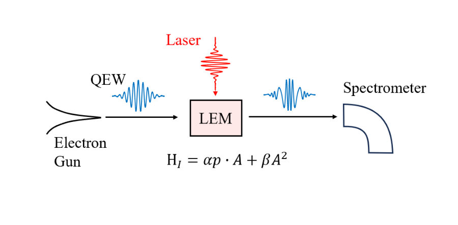
<figcaption class="paper-figure-caption"><b>Fig 1.</b> Figure 1 | Schematic architecture of a light–electron modulator (LEM). An electron source prepares an incident quantum electron wavepacket (QEW), which interacts with a synchronized optical near field in the LEM region and is analyzed by a downstream spectrometer. In the model developed here, the interaction Hamiltonian 𝐻𝐼 = 𝛼𝑝· 𝐴 + 𝛽𝐴² contains two modulation channels: the linear 𝑝· 𝐴 coupling and the ponderomotive 𝐴² coupling.</figcaption>
</figure>
<figure class="paper-figure-card">
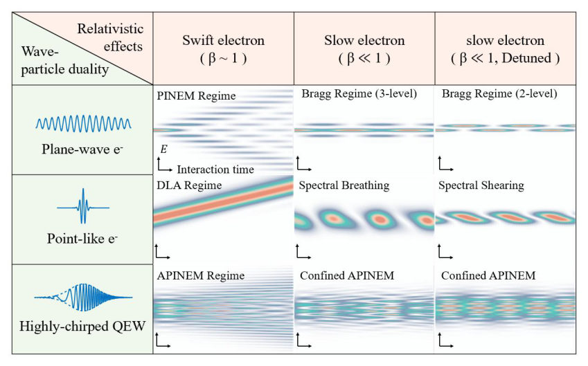
<figcaption class="paper-figure-caption"><b>Fig 2.</b> Figure 2 | Regime map of light–electron modulation. The map classifies LEM dynamics using two control axes: the longitudinal character of the incident electron wavepacket and the kinematic phase-matching condition. Along the wavepacket axis, the electron evolves from an extended plane-wave-like QEW to a localized wavepacket and then to a highly chirped QEW after free- space dispersion. Along the kinematic axis, swift electrons correspond to Raman–Nath-type modulation, whereas slow or detuned electrons enter Bragg-type regimes where recoil and phase mismatch become important. The resulting parameter space connects PINEM, DLA-like acceleration, spectral breathing, spectral shearing, and...</figcaption>
</figure>
<figure class="paper-figure-card">
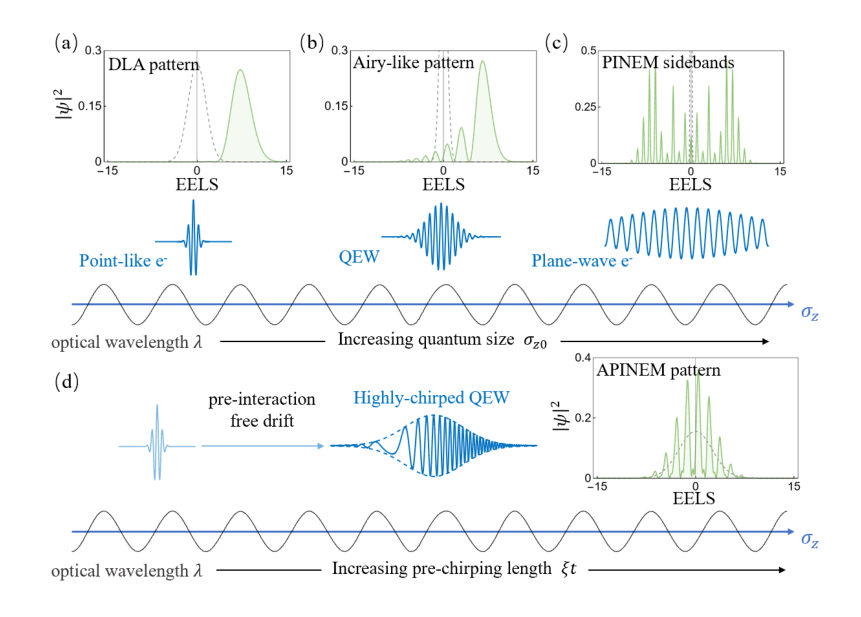
<figcaption class="paper-figure-caption"><b>Fig 3.</b> Figure 3. Wavepacket-controlled spectral crossover between DLA-like modulation, PINEM, and APINEM. (a–c) Increasing the intrinsic longitudinal wavepacket size 𝜎𝑧0 changes the spectrum from a continuous DLA-like energy shift to an intermediate Airy-like pattern and finally to a discrete PINEM sideband comb. (d) A localized wavepacket with 𝜎𝑧0 ≪ 𝜆 can expand during pre-interaction free drift and acquire a longitudinal chirp. This chirped-QEW input produces an APINEM spectrum with periodic spectral bunching on a broad momentum envelope, distinct from both the localized DLA-like limit and the extended PINEM limit.</figcaption>
</figure>
<figure class="paper-figure-card">
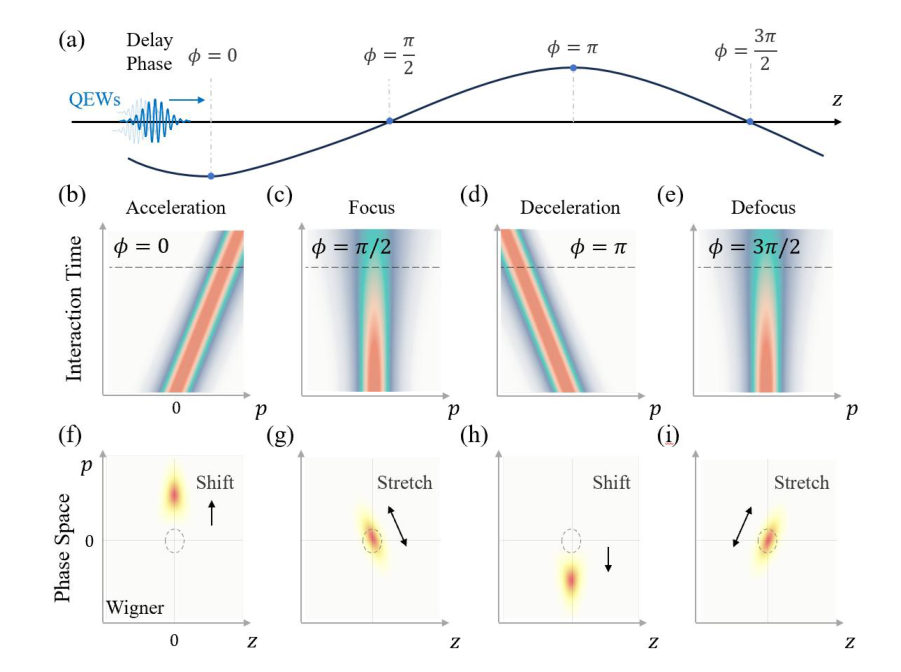
<figcaption class="paper-figure-caption"><b>Fig 4.</b> Figure 4 | Phase-dependent longitudinal modulation in the localized-wavepacket limit. (a) A localized QEW samples a delay phase 𝜙 of the driving optical field. (b,f) Injection near 𝜙 = 0 produces a positive momentum shift corresponding to acceleration, whereas (d,h) injection near 𝜙 = 𝜋 produces a negative momentum shift corresponding to deceleration. (c,g) Injection near 𝜙 = 𝜋/2 produces a velocity chirp with little net energy shift and can focus the wavepacket after drift; (e,i) injection near 𝜙 = 3𝜋/2 produces the opposite chirp and defocuses the longitudinal wavepacket. The middle panels show spectral evolution, and the lower panels show the corresponding Wigner phase-space...</figcaption>
</figure>
<figure class="paper-figure-card">
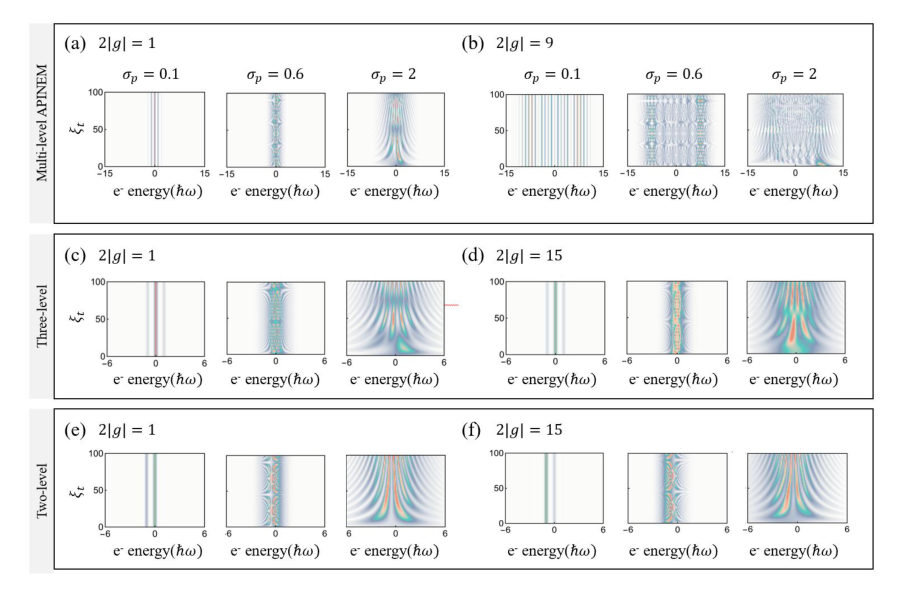
<figcaption class="paper-figure-caption"><b>Fig 5.</b> Figure 5 | Pre-chirp control of APINEM spectra across different LEM regimes. The maps show APINEM spectra as functions of the initial momentum spread 𝜎𝑝, chirping length 𝜉𝑡, and coupling strength 𝑔, with the electron energy shift normalized by ℏ𝜔. In swift electrons, APINEM is embedded in a multilevel PINEM-like ladder, whereas in slow electrons, recoil and phase detuning confine the dynamics to three-level or two-level Bragg-regime subspaces. Increasing 𝜎𝑝 and 𝜉𝑡 drives the spectra from narrow sideband features to broadened, oscillatory, and branched interference patterns, demonstrating pre-chirping as a control knob for APINEM engineering across Raman–Nath and Bragg regimes.</figcaption>
</figure>
</div>

<p><strong>Summary.</strong> This paper introduces the Light-Electron Modulation (LEM) framework to unify the understanding of light-electron interactions with free-electron wavepackets. It treats the optical field as a programmable phase modulator, allowing for the coherent control of electron energy, momentum, and temporal structure. This establishes LEM as a versatile platform for advanced femtosecond-to-attosecond matter-wave control.</p>
<p><strong>Why it may be interesting.</strong> This work is highly relevant as it provides a general, device-level platform for controlling matter-wave dynamics using light, connecting established quantum optics phenomena to free-electron quantum control.</p>
<details>
<summary>Detailed structure</summary>
<p><strong>Main problem.</strong> The paper aims to develop a unified theoretical framework for understanding and controlling the interaction between ultrafast light and free-electron wavepackets.</p>
<p><strong>Main result.</strong> It establishes the Light-Electron Modulation (LEM) framework, which unifies disparate light-electron interactions (like PINEM, DLA, and diffraction) into a single, programmable modulation picture.</p>
<p><strong>Method.</strong> The authors model the interaction using the minimal-coupling Hamiltonian and analyze the system by treating the optical near field as a programmable phase modulator for the electron wavepacket.</p>
<p><strong>Model / system.</strong> The system involves free-electron wavepackets interacting with structured optical near fields. The model utilizes the minimal-coupling Hamiltonian and classifies dynamics into longitudinal (EOM-like) and transverse (AOM-like) modulation channels.</p>
<p><strong>Key observables.</strong> Energy spectra (sidebands), temporal density, transverse wavefronts, and the ability to control electron-photon quantum interfaces.</p>
<p><strong>Important parameters / regimes.</strong> Wavepacket extent ($\sigma_z$), recoil, phase matching conditions, and the coupling strengths ($\alpha, eta$).</p>
<p><strong>Assumptions / limitations.</strong> The framework assumes that the optical near field can be treated as a programmable phase modulator, and it explores the transition between localized (DLA) and extended (PINEM) wavepacket regimes.</p>
<p><strong>Figures summary.</strong> Figures illustrate the regime map classifying dynamics based on wavepacket size and phase matching, show spectral evolution across different limits, and detail the comparison between classical (DLA) and quantum (PINEM) bunching mechanisms.</p>
<p><strong>Paper structure.</strong> The paper progresses by first introducing the LEM concept, deriving the governing equations using the minimal-coupling Hamiltonian, and then systematically analyzing different physical regimes (DLA, PINEM, Bragg) to build a comprehensive, unified theoretical picture.</p>
</details>
<details>
<summary>Abstract</summary>
<p>Coherent optical modulation of free-electron wavepackets offers a route to ultrafast beam steering, energy exchange, temporal compression, and quantum-state shaping. Recent advances in photon-induced near-field electron microscopy (PINEM), ultrafast Kapitza-Dirac effect (KDE) and dielectric laser acceleration (DLA) have demonstrated strong light-electron coupling, but longitudinal energy modulation, transverse momentum transfer, and wavepacket-dependent diffraction are still commonly described with separate models. Here, we develop a unified Light-Electron Modulation (LEM) framework that treats optical near fields as programmable phase modulators for free-electron wavepackets. Within this framework, we identify longitudinal and transverse modulation channels, analogous to electro-optic phase modulation and acousto-optic diffraction of light, respectively, and show how their operation depends on wavepacket extent, recoil, phase matching, and optical-field geometry. This formulation organizes PINEM, Raman-Nath and Bragg diffraction, DLA-like acceleration, and anomalous PINEM as limiting regimes of a common modulation picture. The resulting framework provides design principles for free-electron modulators that can control energy spectra, temporal density, transverse wavefronts, and electron-photon quantum interfaces, establishing LEM as a device-level platform for programmable femtosecond-to-attosecond matter-wave control.</p>
</details>
<p><sub><a href="#top">↑ back to top</a></sub></p>

<p><a id="paper-2610.37087"></a></p>
<h3 id="exact-decoherence-dynamics-of-a-detector-coupled-to-vacuum-fluctuations-in-bounded-geometries"><a href="http://arxiv.org/abs/2610.37087v1">Exact decoherence dynamics of a detector coupled to vacuum fluctuations in bounded geometries</a></h3>
<p><strong>Authors:</strong> Zi'an Zhao, Wenting Zhou<br>
<strong>Type:</strong> theory · <strong>Category:</strong> other · <strong>PDF:</strong> <a href="https://arxiv.org/pdf/2610.37087v1">https://arxiv.org/pdf/2610.37087v1</a><br>
<strong>Analysis basis:</strong> full PDF text, analyzed in chunks
<strong>Topic relevance:</strong> <code>correlated / nonlocal dissipation</code> <strong>3/5</strong> · <code>Keldysh / 2PI / non-Gaussian methods</code> <strong>2/5</strong> · <code>methods for driven-dissipative</code> <strong>2/5</strong> · <code>quantum measurements</code> <strong>1/5</strong></p>
<div class="figure-strip-hint">↔ Scroll figures horizontally</div>
<div class="paper-figures-scroll">
<figure class="paper-figure-card">
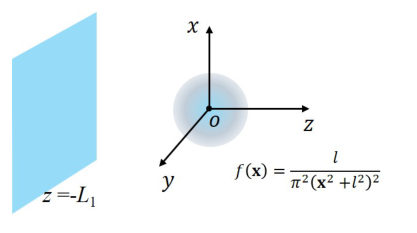
<figcaption class="paper-figure-caption"><b>Fig 1.</b> FIG. 1: Schematic of a detector near a perfectly reflecting planar boundary.</figcaption>
</figure>
<figure class="paper-figure-card">
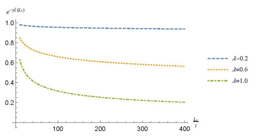
<figcaption class="paper-figure-caption"><b>Fig 2.</b> FIG. 3: Asymptotic coherence for a detector located at various distances from a perfectly reflecting boundary. The dashed blue, dotted yellow, and dash-dotted green lines represent λ = 0.2, 0.6, and 1.0, respectively.</figcaption>
</figure>
<figure class="paper-figure-card">
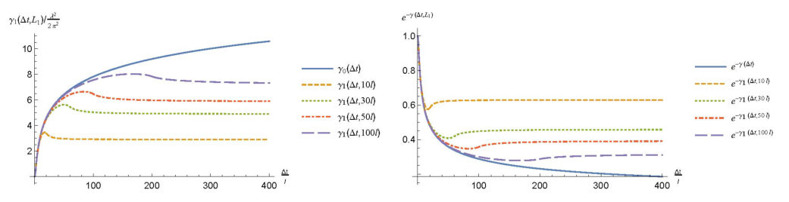
<figcaption class="paper-figure-caption"><b>Fig 3.</b> FIG. 2: Decoherence dynamics of a detector near a perfectly reflecting boundary. The vertical axis in subfigure (2a) denotes the decoherence function in units of λ2</figcaption>
</figure>
<figure class="paper-figure-card">
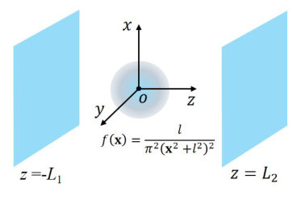
<figcaption class="paper-figure-caption"><b>Fig 4.</b> FIG. 4: Schematic of a detector placed inside a cavity formed by two parallel perfectly reflecting boundaries. The detector is located at the origin, and the boundaries at z = −L1 and z = L2, with L = L1 + L2 the cavity width.</figcaption>
</figure>
<figure class="paper-figure-card">
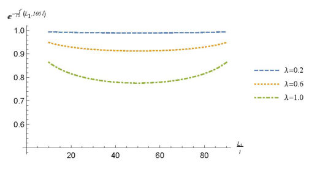
<figcaption class="paper-figure-caption"><b>Fig 5.</b> FIG. 5: Asymptotic coherence for a detector in a cavity, located at a distance L1 ∈[10l, 90l] from one of the boundaries. The cavity width is set to be L = 100l.</figcaption>
</figure>
</div>

<p><strong>Summary.</strong> This theoretical paper calculates the decoherence of a quantum detector coupled to vacuum fluctuations in various geometries. By comparing free space, single-boundary, and cavity environments, the authors show that boundaries can suppress decoherence, leading to oscillatory dynamics and the partial preservation of quantum coherence. This demonstrates a method for engineering quantum coherence using boundary engineering.</p>
<p><strong>Why it may be interesting.</strong> This work directly addresses the engineering of quantum coherence by manipulating the vacuum environment, which is a central theme in modern quantum optics and open quantum systems theory.</p>
<details>
<summary>Detailed structure</summary>
<p><strong>Main problem.</strong> The paper investigates how the decoherence dynamics of a quantum detector are modified by the boundary conditions of the surrounding vacuum environment.</p>
<p><strong>Main result.</strong> Boundary conditions can significantly alter decoherence, leading to partial coherence preservation, oscillatory dynamics, and better coherence retention compared to free space.</p>
<p><strong>Method.</strong> The authors derive an exact general expression for the decoherence function by analyzing the reduced density matrix of the detector coupled to a vacuum scalar field.</p>
<p><strong>Model / system.</strong> The system consists of a two-level detector coupled via a $\hat{\sigma}_z$-coupling scheme to a vacuum scalar field ($\hat{\phi}$) in different geometries: free space, near a single boundary, or inside a cavity.</p>
<p><strong>Key observables.</strong> The decoherence function, $\gamma(\Delta t)$, and the decay of the off-diagonal elements of the detector's reduced density matrix, $e^{-\gamma(\Delta t)}$.</p>
<p><strong>Important parameters / regimes.</strong> Detector-boundary distance ($L_1$), cavity width ($L$), and coupling strength ($\lambda$).</p>
<p><strong>Assumptions / limitations.</strong> The analysis uses the $\hat{\sigma}_z$-coupling scheme, which allows for an exact solution without resorting to the Born-Markov approximation.</p>
<p><strong>Figures summary.</strong> Figures illustrate the comparison of decoherence functions ($\gamma$ vs. $\Delta t$) in free space versus near boundaries, and show the oscillatory behavior and asymptotic coherence in a cavity.</p>
<p><strong>Paper structure.</strong> The paper progresses by first establishing the general framework for decoherence in vacuum fluctuations, then analyzing the specific cases of free space, single boundaries, and finally, the more complex geometry of a confining cavity.</p>
</details>
<details>
<summary>Abstract</summary>
<p>The properties of quantum vacuum are highly sensitive to the underlying spacetime geometry and boundary conditions. We investigate in this paper the decoherence dynamics of a two-level system (detector) coupled to a vacuum scalar field through the $\hatσ_z$-coupling scheme under various boundary environments. By rigorously evaluating the reduced density matrix of the detector, we derive an exact general expression for the detector's decoherence function, $γ(Δt)$, and use it to characterize the dynamical decoherence of a detector in three scenarios: free space, a perfectly reflecting boundary, and a cavity formed by two parallel reflecting boundaries. We find that in free space the detector's coherence decays monotonically with time, indicating that vacuum fluctuations alone inevitably lead to a complete loss of coherence. In the single-boundary case, by contrast, the detector's coherence displays non-monotonic time evolution: $γ(Δt)$ increases with time up to a maximum and then settles to a steady value, indicating that the initial coherence can be partially preserved due to the presence of the boundary. When the detector is placed inside a cavity, its coherence evolution exhibits oscillatory behavior, and a significant fraction of the initial coherence survives. Moreover, for the same detector-boundary distance, more coherence is preserved in the cavity case than in the single-boundary case. These results provide a viable route for engineering quantum coherence via boundary conditions.</p>
</details>
<p><sub><a href="#top">↑ back to top</a></sub></p>

<p><a id="paper-2610.36567"></a></p>
<h3 id="continuum-neural-wavefunctions-for-anyons-on-a-torus"><a href="http://arxiv.org/abs/2610.36567v1">Continuum neural wavefunctions for anyons on a torus</a></h3>
<p><strong>Authors:</strong> Ahmed Khalifa, Shubhayu Chatterjee<br>
<strong>Type:</strong> theory · <strong>Category:</strong> strongly correlated electrons · <strong>PDF:</strong> <a href="https://arxiv.org/pdf/2610.36567v1">https://arxiv.org/pdf/2610.36567v1</a><br>
<strong>Analysis basis:</strong> full PDF text, analyzed in chunks
<strong>Topic relevance:</strong> <code>analog quantum simulation</code> <strong>3/5</strong> · <code>methods for driven-dissipative</code> <strong>3/5</strong> · <code>Keldysh / 2PI / non-Gaussian methods</code> <strong>1/5</strong></p>
<div class="figure-strip-hint">↔ Scroll figures horizontally</div>
<div class="paper-figures-scroll">
<figure class="paper-figure-card">
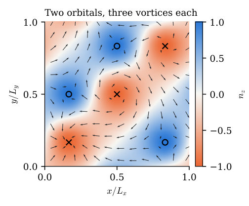
<figcaption class="paper-figure-caption"><b>Fig 1.</b> FIG. 2. Analytic starting orbital texture for N = 6. Color shows the orbital pseudospin component nz, and arrows show (nx, ny). Crosses and circles mark the three vortices of each orbital function. The disjoint zero sets give a smooth normal- ized orbital vector.</figcaption>
</figure>
<figure class="paper-figure-card">
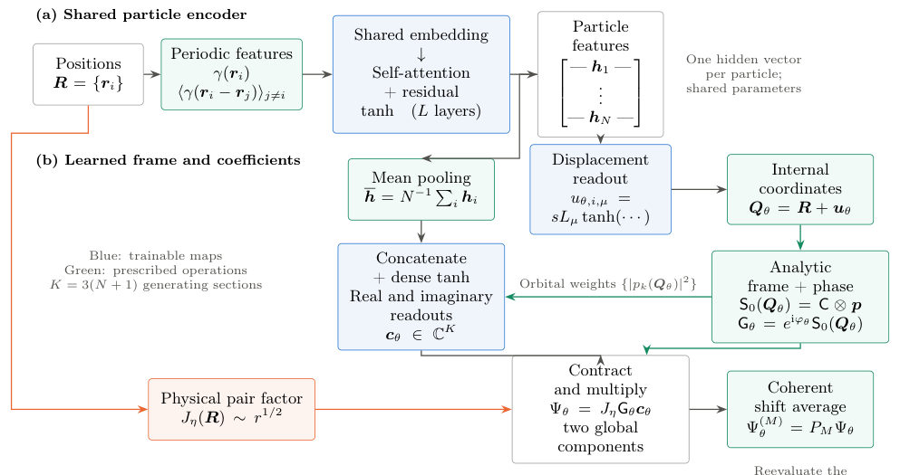
<figcaption class="paper-figure-caption"><b>Fig 2.</b> FIG. 3. Computational graph of the learned orbital-frame ansatz. (a) Periodic position and pair features pass through one shared attention encoder to give a hidden vector for each particle. (b) A particlewise readout produces displacements; their internal coordinates sample the analytic frame, and a common phase restores physical transport. The same hidden vectors are mean-pooled and augmented by the orbital weights |pk(Qθ)|2 before the complex coefficient readout. The pair factor uses the physical positions. Contracting the frame with its coefficients and multiplying by Jη gives the two-component amplitude. The final momentum projection coherently averages evaluations of this entire graph...</figcaption>
</figure>
<figure class="paper-figure-card">
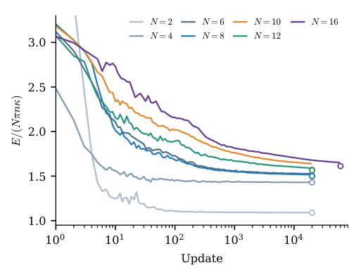
<figcaption class="paper-figure-caption"><b>Fig 3.</b> FIG. 4. Training energies of the selected states, per particle in units of the average-field value πnκ (Sec. VI). Lines show the walker average of eW for the state projected through the training filter PM, averaged over logarithmically spaced up- date intervals; the N = 16 state is trained for 6×104 updates. Open circles are the frozen P2M energies of Tables I and II.</figcaption>
</figure>
<figure class="paper-figure-card">
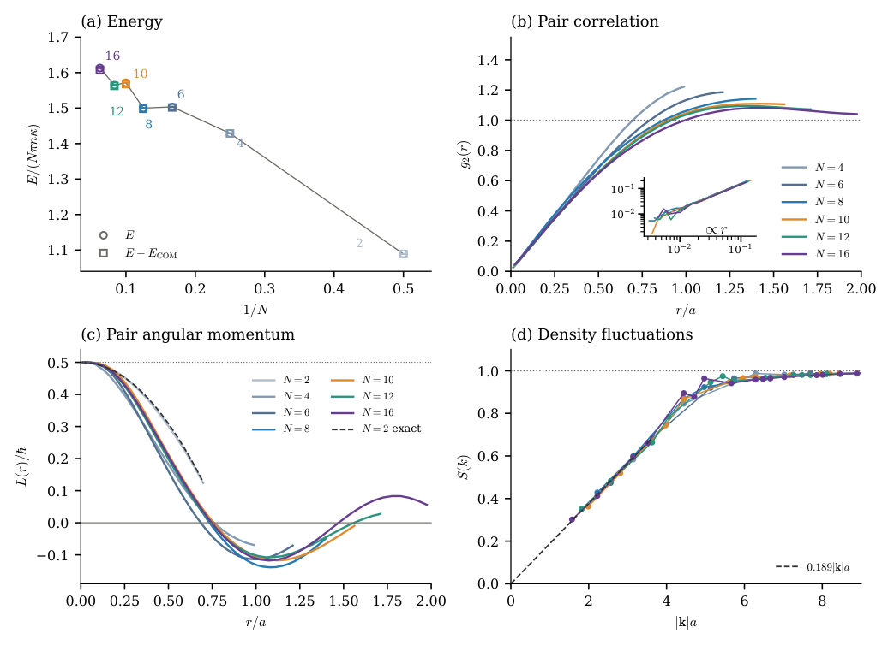
<figcaption class="paper-figure-caption"><b>Fig 4.</b> FIG. 5. Particle-number dependence of the frozen variational states, with mean spacing a = (V/N)1/2. All states are evaluated through P2M; N = 16 uses width 256. (a) Energy in average-field units, with and without the center-of-mass part; point labels give N and error bars show two statistical standard errors. (b) Radial pair correlation at N = 4–16; the logarithmic inset shows the contact law for N = 8, 10, 12, 16. (c) Pair relative angular momentum, with two-standard-error bands and the exact two-semion result. (d) Shell-averaged static structure factor at N = 4–16. The dashed line fits the N ≥8 points with |k|a &lt; 3.6.</figcaption>
</figure>
<figure class="paper-figure-card">
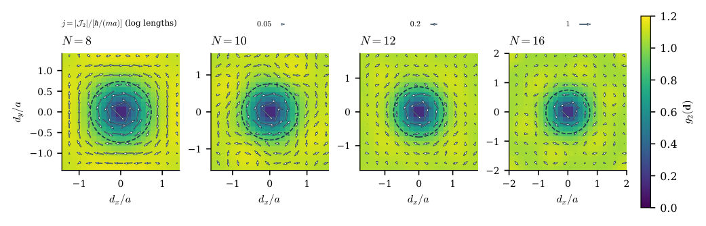
<figcaption class="paper-figure-caption"><b>Fig 5.</b> FIG. 6. Pair correlations and currents beyond ED. Color maps show g2(d) for the selected N = 8, 10, 12, 16 states, on their full minimum-image separation cells in spacing units. Arrows show the measured joint pair current; every second map bin is displayed. Arrow lengths are proportional to ln(1 + j/0.05), where j = |J 2|/[ℏ/(ma)], using the same scale in all panels. This logarithmic scale makes weak currents visible while preserving their directions. Dashed circles mark the first zero of the radially averaged L(r). No rotation or reflection averaging is applied.</figcaption>
</figure>
</div>

<p><strong>Summary.</strong> This work introduces AnyFormer, a neural variational framework designed to simulate anyons on a torus by explicitly incorporating statistical interactions and global boundary constraints. By optimizing the wavefunction using Variational Monte Carlo, the authors calculate correlation functions for up to 16 semions. This provides a scalable tool for studying the collective behavior and correlation physics of bulk anyonic matter.</p>
<p><strong>Why it may be interesting.</strong> The development of a scalable neural network method to study fractional statistics and topological matter is highly relevant for understanding strongly correlated phases beyond the reach of traditional exact diagonalization techniques.</p>
<details>
<summary>Detailed structure</summary>
<p><strong>Main problem.</strong> The paper addresses the microscopic description of the collective behavior of interacting, mobile anyons at finite density on a torus.</p>
<p><strong>Main result.</strong> The proposed AnyFormer framework successfully scales calculations up to 16 semions, revealing pronounced correlation holes and damped spatial oscillations in pair circulation.</p>
<p><strong>Method.</strong> It employs a novel neural variational framework (AnyFormer) optimized via Variational Monte Carlo (VMC) to handle the complex statistical interactions and global winding constraints of the system.</p>
<p><strong>Model / system.</strong> The system consists of anyons (specifically semions) confined to a two-dimensional torus. The wavefunction must account for non-trivial boundary conditions imposed by the toroidal geometry and the fractional exchange statistics.</p>
<p><strong>Key observables.</strong> Pair correlations ($g_2(d)$), density fluctuations, and the pair-circulation profile.</p>
<p><strong>Important parameters / regimes.</strong> The number of particles ($N$), the statistical parameter ($\alpha=1/2$ for semions), and the torus geometry.</p>
<p><strong>Assumptions / limitations.</strong> The method is specialized for semions without external fields or interaction potentials, and it relies on constructing a smooth orbital frame to enforce boundary conditions.</p>
<p><strong>Figures summary.</strong> Figures compare calculated observables like relative density and pair relative angular momentum between the neural network approach and exact diagonalization results for small particle numbers.</p>
<p><strong>Paper structure.</strong> The paper first establishes the physical constraints of anyons on a torus, detailing the necessary two-component wavefunction structure. It then introduces the AnyFormer neural ansatz and uses VMC to optimize the system's energy, validating the results against known exact solutions for small $N$ before scaling up.</p>
</details>
<details>
<summary>Abstract</summary>
<p>Mobile anyons in topologically ordered phases provide a setting to investigate how fractional exchange statistics shapes collective behavior at finite density. We introduce AnyFormer: a neural variational framework for continuum anyons on a torus that explicitly incorporates statistical interactions and global winding constraints. We construct a smooth orbital frame that enforces the matrix-valued torus boundary conditions, and supplement it with an analytic pair factor that supplies the regular collision behavior. The orbital geometry and many-body amplitudes are optimized in parallel by variational Monte Carlo. We apply AnyFormer to semions without an external field or interaction potential, isolating unique correlations generated solely by statistics. Our framework closely matches exact two-semion energies and yields lower variational energies than finite-cutoff exact diagonalization for $N = 4$ and $6$ semions. Scaling up to $N = 16$ semions, well beyond the limits of continuum diagonalization, our calculations reveal states with pronounced correlation holes, suppressed long-wavelength density fluctuations, and a reversal of pair circulation at a distance set by the mean particle spacing. For $N = 12$ and $16$ semions, the circulation develops damped spatial oscillations. AnyFormer thus provides a scalable variational neural-net framework for microscopic studies of correlations, chiral motion, and collective phases of bulk anyonic matter.</p>
</details>
<p><sub><a href="#top">↑ back to top</a></sub></p>

<p><a id="paper-2610.36322"></a></p>
<h3 id="experimental-geometric-state-preparation-on-the-bloch-sphere-via-linear-mechanical-resonator"><a href="http://arxiv.org/abs/2610.36322v1">Experimental Geometric State Preparation on the Bloch Sphere Via Linear Mechanical Resonator</a></h3>
<p><strong>Authors:</strong> Abrar N-E Faiaz, Donte McMullen, Kazi T Mahmood, M. Arif Hasan, Pierre Deymier, Keith Runge, Joshua A. Levine<br>
<strong>Type:</strong> experiment · <strong>Category:</strong> other · <strong>PDF:</strong> <a href="https://arxiv.org/pdf/2610.36322v1">https://arxiv.org/pdf/2610.36322v1</a><br>
<strong>Analysis basis:</strong> full PDF text, analyzed in chunks
<strong>Topic relevance:</strong> <code>analog quantum simulation</code> <strong>3/5</strong> · <code>quantum measurements</code> <strong>2/5</strong> · <code>QC/QI experiment</code> <strong>1/5</strong> · <code>driven-dissipative phase transition</code> <strong>1/5</strong></p>
<div class="figure-strip-hint">↔ Scroll figures horizontally</div>
<div class="paper-figures-scroll">
<figure class="paper-figure-card">
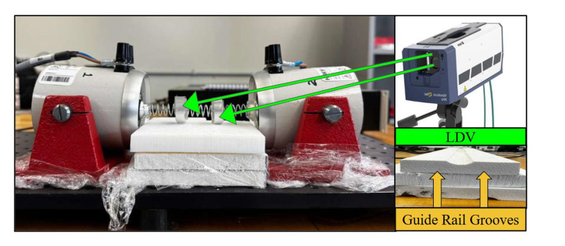
<figcaption class="paper-figure-caption"><b>Fig 1.</b> Figure 1. Experimental Setup for Two-Mass System: The experimental setup shows the two-</figcaption>
</figure>
<figure class="paper-figure-card">
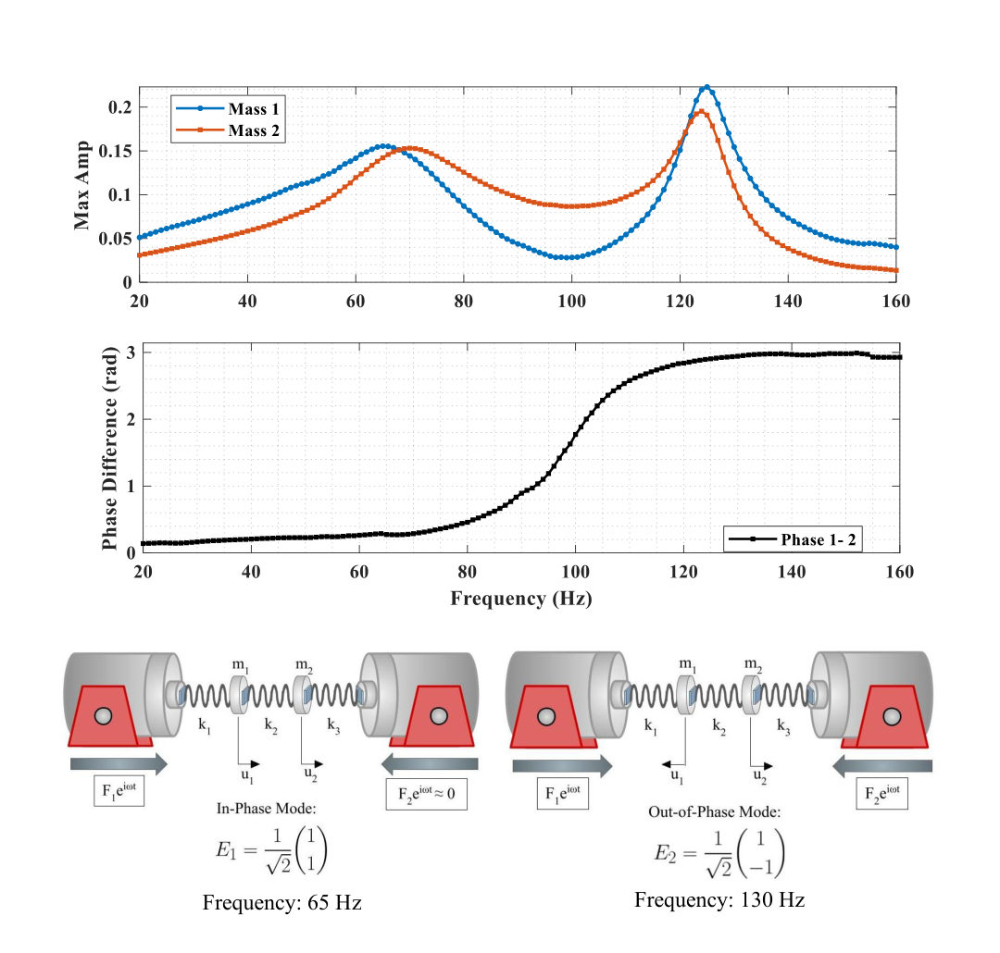
<figcaption class="paper-figure-caption"><b>Fig 2.</b> Figure 2: Transmission characterization of the two-mass three-spring system. Top: Steady-</figcaption>
</figure>
<figure class="paper-figure-card">
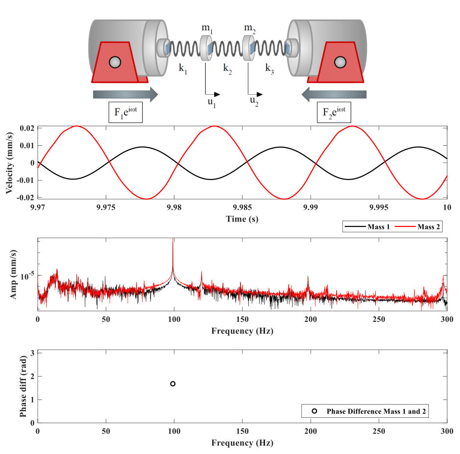
<figcaption class="paper-figure-caption"><b>Fig 3.</b> Figure 3. Time-series and frequency-domain analysis of the two-mass system driven at 99</figcaption>
</figure>
<figure class="paper-figure-card">
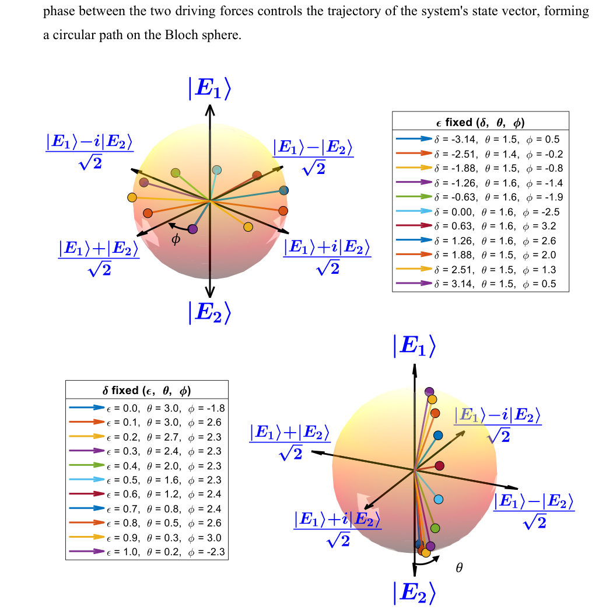
<figcaption class="paper-figure-caption"><b>Fig 4.</b> Figure 4. Steady-State Bloch Sphere Representation: Evolution of the system’s state on the</figcaption>
</figure>
</div>

<p><strong>Summary.</strong> This paper reports on the experimental realization of geometric state preparation on the Bloch sphere using a simple, linear two-mass mechanical resonator. By precisely controlling the relative amplitudes and phases of external driving forces, the system's steady-state motion can be steered across the two-mode manifold, mapping directly onto the Bloch sphere. This establishes a robust, classical platform for testing fundamental concepts in quantum state control.</p>
<p><strong>Why it may be interesting.</strong> This work provides a tangible, classical, and highly controllable mechanical testbed to validate theoretical concepts of quantum state preparation and two-mode dynamics, which is valuable for developing experimental protocols for quantum systems.</p>
<details>
<summary>Detailed structure</summary>
<p><strong>Main problem.</strong> The goal was to experimentally demonstrate and quantify the preparation of quantum-like states on the Bloch sphere using a purely classical, linear mechanical resonator.</p>
<p><strong>Main result.</strong> The experiment successfully mapped the system's steady-state response onto the Bloch sphere, showing controllable planar rotations and continuous steering between eigenstates by tuning boundary excitation parameters.</p>
<p><strong>Method.</strong> The researchers used a two-mass, three-spring mechanical system driven harmonically at a fixed frequency between the natural resonances, measuring modal coefficients via a scanning laser vibrometer.</p>
<p><strong>Model / system.</strong> The physical platform is a linear two-mass, three-spring mechanical resonator. The dynamics are analyzed by linearizing the equations of motion and mapping the resulting two-mode superposition state onto the Bloch sphere coordinates ($ heta, \phi$).</p>
<p><strong>Key observables.</strong> Bloch sphere coordinates ($    heta, \phi$), complex modal coefficients, phase difference between masses, and amplitude response.</p>
<p><strong>Important parameters / regimes.</strong> Driving frequency (fixed between resonances), relative amplitude ratio ($\epsilon$), and relative driving phase ($\delta$).</p>
<p><strong>Assumptions / limitations.</strong> The system operates in a linear regime, and the state reconstruction relies on normalizing the extracted modal coefficients rather than the driving force.</p>
<p><strong>Figures summary.</strong> Figures illustrate the experimental setup, the two resonance peaks, the mapping of state evolution ($  heta$ vs $\phi$) on the Bloch sphere by varying control parameters, and histograms quantifying the repeatability error of the reconstructed angles.</p>
<p><strong>Paper structure.</strong> The paper establishes the physical model and the mapping to the Bloch sphere, details the experimental setup and measurement protocols (driving at a fixed frequency between resonances), and then presents the results showing controlled state manipulation via parameter sweeps.</p>
</details>
<details>
<summary>Abstract</summary>
<p>The Bloch sphere representation, familiar from quantum two-level systems, can also describe classical linear systems whose dynamics are effectively confined to two modes. Here, we experimentally realize this framework in a linear two-mass, three-spring mechanical system by controlling superpositions of its symmetric and antisymmetric eigenmodes. The system is driven from both boundaries at a fixed frequency between the two resonances, so that the steady-state response remains within a two-mode manifold. By independently varying the relative amplitude and phase of the boundary excitations, we generate tunable modal superpositions. Scanning laser vibrometer measurements and frequency-domain analysis are used to extract the complex modal coefficients, which are then normalized and mapped onto Bloch sphere coordinates. This reconstruction reveals planar rotations of the state under phase sweeps and continuous steering between eigenstates under amplitude-ratio tuning. These results provide an experimental validation of Bloch sphere state reconstruction and steady-state geometric state preparation in a minimal linear mass-spring platform, establishing a simple classical testbed for exploring two-mode manifold dynamics.</p>
</details>
<p><sub><a href="#top">↑ back to top</a></sub></p>

<p><a id="paper-2610.37505"></a></p>
<h3 id="new-developments-in-diagrammatic-monte-carlo-for-interacting-lattice-fermions-efficient-algorithms-and-applications"><a href="http://arxiv.org/abs/2610.37505v1">New Developments in Diagrammatic Monte Carlo for Interacting Lattice Fermions: Efficient Algorithms and Applications</a></h3>
<p><strong>Authors:</strong> Boyuan Shi<br>
<strong>Type:</strong> theory · <strong>Category:</strong> strongly correlated electrons · <strong>PDF:</strong> <a href="https://arxiv.org/pdf/2610.37505v1">https://arxiv.org/pdf/2610.37505v1</a><br>
<strong>Analysis basis:</strong> full PDF text, analyzed in chunks
<strong>Topic relevance:</strong> <code>analog quantum simulation</code> <strong>3/5</strong> · <code>Keldysh / 2PI / non-Gaussian methods</code> <strong>2/5</strong> · <code>methods for driven-dissipative</code> <strong>2/5</strong></p>
<div class="figure-strip-hint">↔ Scroll figures horizontally</div>
<div class="paper-figures-scroll">
<figure class="paper-figure-card">
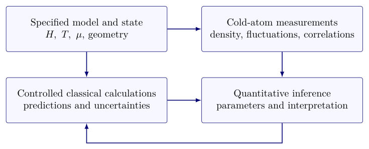
<figcaption class="paper-figure-caption"><b>Fig 1.</b> Figure 1.1: Calculation and measurement in an equilibrium quantum-simulation benchmark. Both use the specified Hamiltonian, state and geometry. The return arrow represents a further calculation prompted by the comparison, such as a more temperature-sensitive ob- servable or a refined parameter grid.</figcaption>
</figure>
<figure class="paper-figure-card">
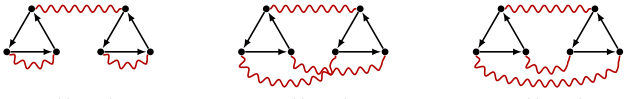
<figcaption class="paper-figure-caption"><b>Fig 2.</b> Figure 2.1: The five connected topological representatives at first non-Gaussian order. Ar- rows denote gH and wavy lines the negative screened covariance W. The displayed factors already include the multiplicity of labelled Wick pairings. Line crossings without dots are not additional vertices.</figcaption>
</figure>
<figure class="paper-figure-card">
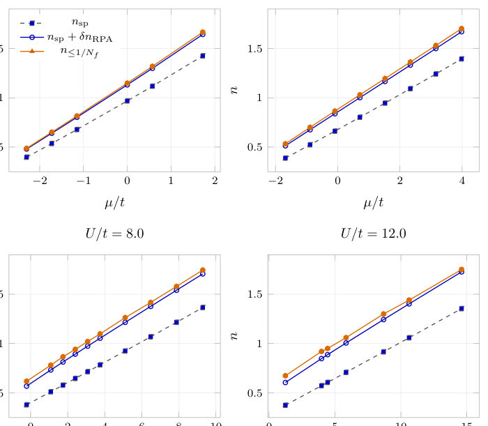
<figcaption class="paper-figure-caption"><b>Fig 3.</b> Figure 2.2: Cumulative density estimates in Table 2.2, first reported in Ref. [1], for the 70 × 70 square-lattice SU(6) Hubbard model at T/t = 0.15. The curves show the saddle result, the saddle plus the RPA correction, and the sum through O(1/Nf). Error bars give the final-sum uncertainties listed in the table; the saddle and saddle-plus-RPA curves are deterministic numerical values. Lines are guides to the eye. Vertical separations give the density change produced by each correction.</figcaption>
</figure>
<figure class="paper-figure-card">
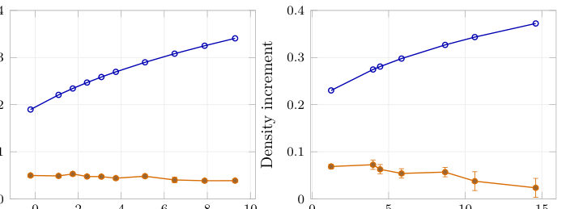
<figcaption class="paper-figure-caption"><b>Fig 4.</b> Figure 2.3: Additive density contributions at the state points of Fig. 2.2. The RPA increment is deterministic. The first non-Gaussian increment is δn1/Nf = n≤1/Nf −nsp −δnRPA, with the same absolute Monte Carlo uncertainty as the cumulative density. All panels share the same vertical scale, and lines are guides to the eye. The non-Gaussian contribution varies with filling as well as interaction strength.</figcaption>
</figure>
<figure class="paper-figure-card">
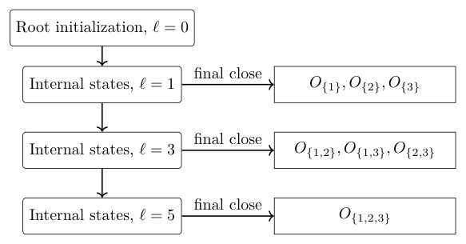
<figcaption class="paper-figure-caption"><b>Fig 5.</b> Figure 3.1: All-subset readout for a three-interaction envelope. Vertical arrows propagate internal states; layers ℓ= 2, 4 are omitted. Horizontal arrows close copies of those states into the named subset outputs. The original open states continue to the next layer.</figcaption>
</figure>
</div>

<p><strong>Summary.</strong> This work presents advanced diagrammatic Monte Carlo methods for calculating thermodynamic and entanglement properties of interacting lattice fermions, particularly using the Hubbard model. The authors introduce highly efficient algorithms, such as a determinant-polynomial sieve, to manage complex diagrammatic summations. The results provide quantitative benchmarks for quantities like density and Rényi entropy, offering crucial theoretical tools for simulating quantum materials.</p>
<p><strong>Why it may be interesting.</strong> The rigorous development of diagrammatic techniques and the focus on calculating entanglement measures like Rényi entropy in lattice fermion models are highly relevant to understanding quantum correlations in strongly correlated systems, which is a major theme in AMO physics.</p>
<details>
<summary>Detailed structure</summary>
<p><strong>Main problem.</strong> The paper addresses the calculation of thermodynamic and subsystem quantities for interacting lattice fermions, aiming to provide precise theoretical benchmarks for quantum simulators.</p>
<p><strong>Main result.</strong> The authors developed highly efficient diagrammatic methods, achieving significant speedups (24-25 times faster) in connected sum calculations and providing quantitative results for the second Rényi entropy on large lattices.</p>
<p><strong>Method.</strong> The core methodology involves developing diagrammatic Monte Carlo techniques, utilizing an inverse-flavour expansion around a Hartree saddle point, and employing advanced summation techniques like the determinant-polynomial sieve.</p>
<p><strong>Model / system.</strong> The primary model is the interacting lattice fermion system, specifically exemplified by the six-flavour Hubbard model on lattices like $70	imes70$ and honeycomb lattices. The Hamiltonian involves hopping ($t$), onsite interaction ($U$), and chemical potential ($\mu$).</p>
<p><strong>Key observables.</strong> Density, double occupancy, and the second Rényi entropy ($S_2/N_s$) are key observables. Subsystem purity is also calculated using the replica path integral.</p>
<p><strong>Important parameters / regimes.</strong> Key parameters include the ratio of interaction to hopping ($U/t$), chemical potential ($\mu/t$), and inverse temperature ($eta t$). Calculations are performed across multiple state points and lattice sizes.</p>
<p><strong>Assumptions / limitations.</strong> The work relies on developing expansions (inverse-flavour expansion) and making approximations regarding the summation of diagrams, though convergence checks are performed by comparing different expansion shifts.</p>
<p><strong>Figures summary.</strong> Figures illustrate various diagram topologies, density estimates, benchmarks comparing the efficiency of the new summation sieve against older CoS baselines, and results for entropy calculations.</p>
<p><strong>Paper structure.</strong> The paper builds from developing the foundational diagrammatic methods (inverse-flavour expansion, CoS++) to applying these methods to calculate specific thermodynamic quantities (density) and complex subsystem measures (Rényi entropy) using replica path integrals.</p>
</details>
<details>
<summary>Abstract</summary>
<p>This thesis develops diagrammatic methods for thermodynamic and subsystem quantities of interacting lattice fermions, providing reference calculations for quantum simulators and many-body approximations. I formulate an inverse-flavour expansion about a self-consistent Hartree saddle, enumerate non-Gaussian diagrams, and use a discrete Lehmann representation to integrate selected internal vertices analytically. Density results cover 31 state points of the six-flavour Hubbard model on a $70\times70$ lattice at $T/t=0.15$.   I generalize combinatorial summation to flavour-dependent propagators and expansion shifts. CoS++ combines partial contractions to obtain connected sums for interaction subsets. A determinant-polynomial sieve evaluates the same sums through local coefficient filters; at ninth order it is 24--25 times faster than the specified CoS baselines in three-flavour dense-random-matrix benchmarks. Thermodynamic applications include a 2048-site honeycomb lattice and a three-flavour square lattice with 1024 sites.   For the second Renyi entropy, I derive a fermionic replica path integral and a stable evaluation of its two-time Green functions. The connected-determinant calculation reaches tenth order on a $3\times3$ cluster and ninth order on larger lattices. On $50\times50$ sites at $(U/t,μ/t,βt)=(3,1,8)$, the ninth-order continuation at shift $α=1.3$ gives $S_2/N_s=0.06695$ with propagated Monte Carlo uncertainty $3.0\times10^{-5}$. Comparing two expansion shifts at their respective retained orders gives an endpoint difference of $2.6\times10^{-4}$.</p>
</details>
<p><sub><a href="#top">↑ back to top</a></sub></p>

<p><a id="paper-2610.37660"></a></p>
<h3 id="optimal-quantum-discrimination-at-liouvillian-exceptional-points"><a href="http://arxiv.org/abs/2610.37660v1">Optimal quantum discrimination at Liouvillian exceptional points</a></h3>
<p><strong>Authors:</strong> Aritra Ghosh, M. Bhattacharya<br>
<strong>Type:</strong> theory · <strong>Category:</strong> other · <strong>PDF:</strong> <a href="https://arxiv.org/pdf/2610.37660v1">https://arxiv.org/pdf/2610.37660v1</a><br>
<strong>Analysis basis:</strong> full PDF text, analyzed in chunks
<strong>Topic relevance:</strong> <code>quantum measurements</code> <strong>3/5</strong> · <code>methods for driven-dissipative</code> <strong>2/5</strong> · <code>correlated / nonlocal dissipation</code> <strong>1/5</strong> · <code>driven-dissipative phase transition</code> <strong>1/5</strong></p>
<div class="figure-strip-hint">↔ Scroll figures horizontally</div>
<div class="paper-figures-scroll">
<figure class="paper-figure-card">
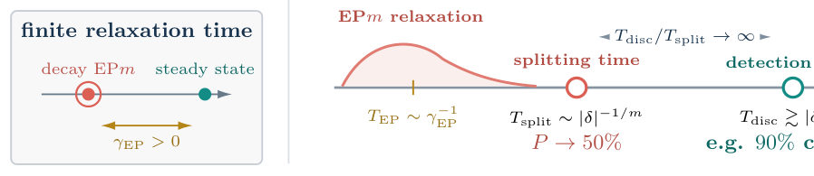
<figcaption class="paper-figure-caption"><b>Fig 1.</b> FIG. 1: Separation of timescales. For the finite-dimensional gapped Lindblad systems, a generic perturbation δ of an EP of order m, the best probability P of correctly deciding whether it is present approaches 50% on the inverse-splitting timescale as δ →0. Presence and absence are equally likely. Reliable detection requires much longer observation times.</figcaption>
</figure>
<figure class="paper-figure-card">
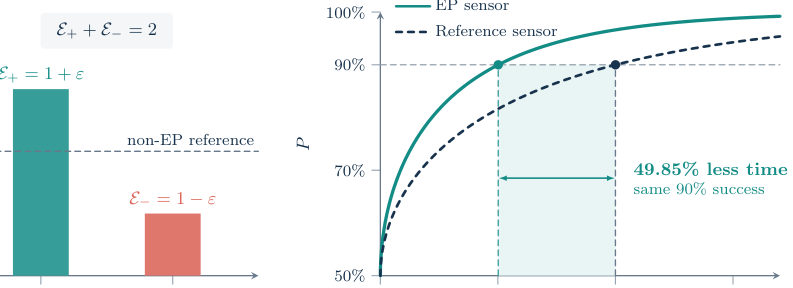
<figcaption class="paper-figure-caption"><b>Fig 2.</b> FIG. 2: Finite improvements in EP-based detection. (a) For a single real EP2 decay block, the most- and least-informative perturbation directions have relative information rates E± = 1 ± ε, with 0 &lt; ε ≤1; the illustration uses ε = 1/2. (b) For a selected weak mechanical force and ideal collection of the cavity emission (η = 1), the optomechanical EP sensor reaches a 90% probability of a correct decision with 49.85% less observation time than a non-EP reference oscillator with the same decay rate. The curves show the weak-force limit and the time is normalized to the reference oscillator’s time to reach the same 90% target.</figcaption>
</figure>
</div>

<p><strong>Summary.</strong> This paper analyzes the fundamental limits of quantum sensing near Exceptional Points (EPs) in open quantum systems. It shows that while EPs don't fundamentally alter the scaling of detection time, they allow for a significant reduction in observation time compared to non-EP systems by selectively enhancing the Quantum Fisher Information rate. The analysis is demonstrated using a detailed optomechanical model.</p>
<p><strong>Why it may be interesting.</strong> This work directly addresses the practical utility of non-Hermitian physics in sensing, providing quantitative guidelines for designing faster, more sensitive quantum sensors using platforms like optomechanics and superconducting qubits.</p>
<details>
<summary>Detailed structure</summary>
<p><strong>Main problem.</strong> The paper investigates whether operating an open quantum system at an Exceptional Point (EP) provides a fundamental advantage in the observation time required for reliably detecting a weak external perturbation compared to a standard non-EP reference.</p>
<p><strong>Main result.</strong> While EPs do not fundamentally change the scaling of detection time with perturbation strength ($\delta$), they can significantly shorten the required observation time for a fixed detection accuracy by selectively enhancing the Quantum Fisher Information (QFI) rate.</p>
<p><strong>Method.</strong> The analysis uses quantum discrimination theory, calculating the detection probability via the state overlap and deriving the required observation time from the growth rate of the QFI, comparing EP dynamics to non-EP dynamics.</p>
<p><strong>Model / system.</strong> The study models finite-dimensional Markovian open quantum systems governed by a Lindblad generator. A specific illustration uses an optomechanical system involving cavity and mechanical oscillators.</p>
<p><strong>Key observables.</strong> Quantum Fisher Information (QFI) rate ($f_Q$), state overlap ($A_T$), and the required observation time ($T_{	ext{disc}}$) for a target detection probability ($p$).</p>
<p><strong>Important parameters / regimes.</strong> Perturbation strength ($\delta$), observation time ($T$), and system parameters defining the EP structure (e.g., $\eta, u, \Gamma$).</p>
<p><strong>Assumptions / limitations.</strong> The general analysis assumes finite-dimensional Markovian open systems with a unique stationary state and a nonzero relaxation gap. The numerical examples rely on the weak perturbation limit ($\epsilon \ll \Gamma$).</p>
<p><strong>Figures summary.</strong> Figure 1 illustrates the separation of timescales, showing that the required detection time ($T_{	ext{disc}} \sim |\delta|^{-2}$) is much longer than the EP splitting time ($T_{	ext{split}} \sim |\delta|^{-1/m}$). Figure 2(b) shows the time advantage in the optomechanical case.</p>
<p><strong>Paper structure.</strong> The paper first establishes the general detection limit for weak perturbations at EPs. It then derives the scaling law for the required detection time. Finally, it applies these concepts to the optomechanical model to quantify the time advantage gained by tuning the perturbation to enhance the QFI rate.</p>
</details>
<details>
<summary>Abstract</summary>
<p>Central to non-Hermitian sensing is the question of whether exceptional points (EPs) can make weak perturbations easier to detect. We show that despite enhanced spectral response, in finite-dimensional Lindblad systems with a unique stationary state and a nonzero relaxation gap, EPs offer no fundamental advantage in how the observation time required for reliable detection of a weak perturbation scales with the perturbation strength. We nevertheless demonstrate that by selectively choosing perturbations that enhance the quantum Fisher information rate, EPs can shorten the observation time needed to reach a predefined detection accuracy relative to a comparable non-EP reference at the same decay rate. As an illustration, we show using an optomechanical model at an EP that we can detect a weak force through the cavity output at the same reliability in less time than a non-EP reference. Our results establish fundamental limits on perturbation detection at EPs and can guide the design of faster non-Hermitian sensors based on optomechanical resonators, superconducting qubits, and trapped ions.</p>
</details>
<p><sub><a href="#top">↑ back to top</a></sub></p>

<p><a id="paper-2610.36359"></a></p>
<h3 id="multi-day-single-cell-magnetic-imaging-of-living-cancer-cells-using-quantum-cell-monitoring"><a href="http://arxiv.org/abs/2610.36359v1">Multi-day single-cell magnetic imaging of living cancer cells using Quantum Cell Monitoring</a></h3>
<p><strong>Authors:</strong> Andre Pointner, Sarah Belasi, Regine Schneider-Stock, Roland Nagy<br>
<strong>Type:</strong> experiment · <strong>Category:</strong> other · <strong>PDF:</strong> <a href="https://arxiv.org/pdf/2610.36359v1">https://arxiv.org/pdf/2610.36359v1</a><br>
<strong>Analysis basis:</strong> full PDF text, analyzed in chunks
<strong>Topic relevance:</strong> <code>QC/QI experiment</code> <strong>3/5</strong> · <code>quantum measurements</code> <strong>3/5</strong></p>
<div class="figure-strip-hint">↔ Scroll figures horizontally</div>
<div class="paper-figures-scroll">
<figure class="paper-figure-card">
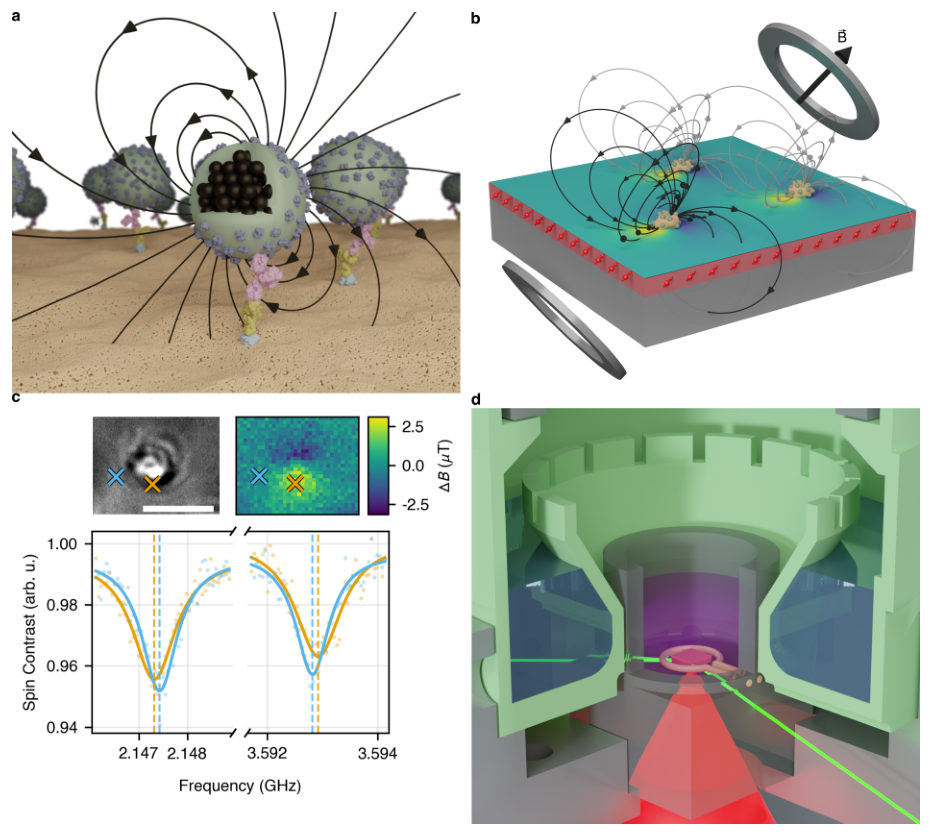
<figcaption class="paper-figure-caption"><b>Fig 1.</b> Fig. 1 Widefield NV center magnetic field microscope for long-term live-cell imaging. a, Illustration of the magnetic labeling protocol. SPIONs (black) are coated in a polymer shell (green) and functionalized with Streptavidin. The primary antibody (yellow) attaches to the EpCAM surface marker (blue) of the cell membrane (brown). The biotinylated secondary antibody (pink) attaches to the primary antibody and provides a binding site for the streptavidin on the SPION surface, resulting in the attachment of SPIONs to available EpCAM surface markers. Magnetization of the sample by a pair of permanent magnets causes the superparamagnetic particles to generate a magnetic dipole field (black field...</figcaption>
</figure>
<figure class="paper-figure-card">
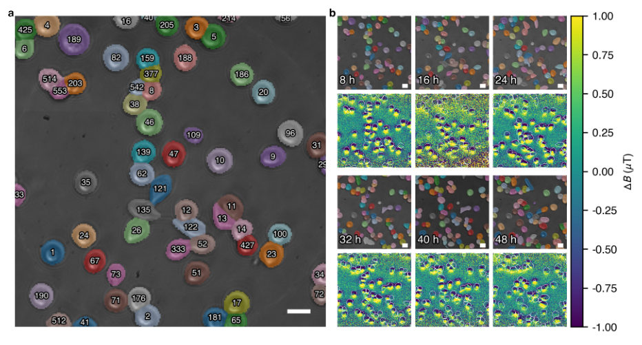
<figcaption class="paper-figure-caption"><b>Fig 2.</b> Fig. 2 Multi-day correlated brightfield and magnetic field imaging of SPION-labeled HT29 cells over a total of 48 h timespan. a, Full FoV brightfield image showing adherent cells with an average diameter of 20 µm on the diamond surface after 8 h seeding. Color overlays indicate segmented cell boundaries with assigned cell identities. b, Time series of correlated brightfield (top) and magnetic field (bottom) images at the ODMR measurement time points spanning the 48 h timeframe. Colored overlays remain consistent. Cell identities are omitted for visual clarity. Individual magnetic dipole signatures of cells are visible, and cell outlines are overlaid based on the brightfield segmentation...</figcaption>
</figure>
<figure class="paper-figure-card">
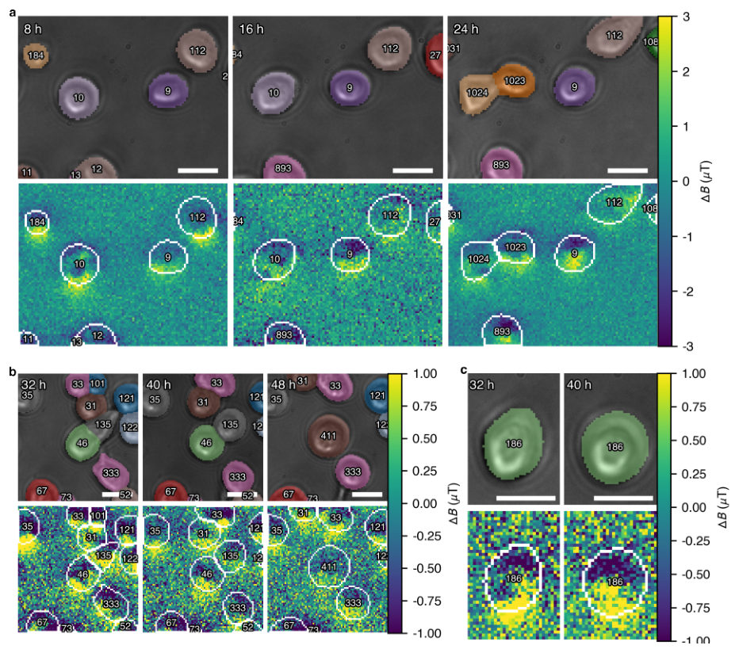
<figcaption class="paper-figure-caption"><b>Fig 3.</b> Fig. 3 Selected ROIs showing observable single cell behavior instances spanning mitosis, entosis and mor- phological changes. a, Cell #10 undergoing mitosis resulting in daughter cells #1023 and #1024. The magnetic dipole is clearly split up into two distinct magnetic field signatures. b, Cell #46 and #135 undergo either tumor cell cannibalism or entosis. Observable in the merging of magnetic field signatures to cell #411. c, Cell #186 undergoes morphological changes by stretching along the vertical direction. This is reflected in an elongation and partial compensation of the magnetic dipole signature, as the positive and negative lobes of the dipole field cancel out over a larger area due...</figcaption>
</figure>
<figure class="paper-figure-card">
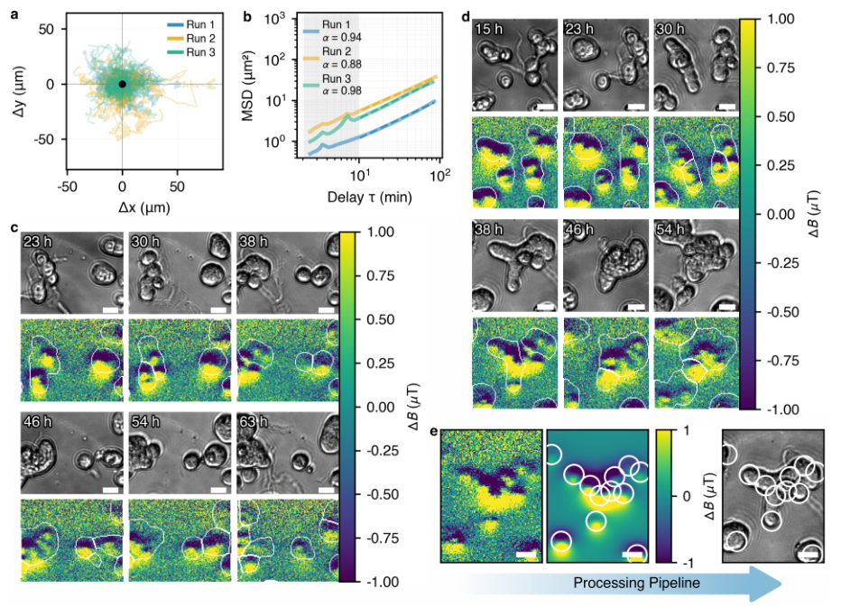
<figcaption class="paper-figure-caption"><b>Fig 4.</b> Fig. 4 Selected ROIs showing observable cell culture dynamics captured in correlated brightfield and mag- netic field imaging of a 66 h timespan experiment. a, Spider plot showing the trajectories of cells that could be tracked for &gt;6 h continuously. The trajectories are colored by experiment and illustrate that migration is limited to a few tens of µm over the course of the experiment. b The mean-squared displacement (MSD) of the tracked cells shows a slight sub-diffusive behavior (α &lt; 1), as expected for adherent single cells in a monolayer culture [22]. Low brightfield image qual- ity, segmentation, and tracking errors in the dense cell clusters cause significant centroid noise, which...</figcaption>
</figure>
</div>

<p><strong>Summary.</strong> This paper introduces Quantum Cell Monitoring (QCM), a novel platform that uses nitrogen-vacancy (NV) centers in diamond to image living cells by detecting stray magnetic fields. By shifting the information carrier from damaging optical photons to static magnetic fields, QCM enables sustained, multi-day observation of cellular processes like mitosis and migration in cancer cells. This overcomes major limitations inherent to traditional optical microscopy.</p>
<p><strong>Why it may be interesting.</strong> This work represents a significant engineering and experimental application of quantum sensing (NV centers) to solve a complex problem in bio-physics, demonstrating the utility of magnetic field measurements over optical ones for long-term monitoring.</p>
<details>
<summary>Detailed structure</summary>
<p><strong>Main problem.</strong> Live-cell imaging is limited by optical damage and scattering, while magnetic resonance lacks single-cell resolution.</p>
<p><strong>Main result.</strong> The Quantum Cell Monitoring (QCM) platform successfully tracks magnetically labeled living cancer cells for up to 72 hours, capturing dynamic events like mitosis and migration.</p>
<p><strong>Method.</strong> The technique encodes single-cell information in stray magnetic fields generated by superparamagnetic nanoparticles, detected using Nitrogen-Vacancy (NV) centers in diamond.</p>
<p><strong>Model / system.</strong> The system uses NV centers to measure local magnetic field shifts ($\Delta f$) caused by the magnetic dipole field ($\mathbf{B}_c(\mathbf{r})$) of labeled cells. This is achieved using a specialized, integrated live-cell incubator.</p>
<p><strong>Key observables.</strong> Local magnetic field strength ($\mathbf{B}_c(\mathbf{r})$) and the resulting shift in the NV center's spin resonance frequency ($\Delta f$).</p>
<p><strong>Important parameters / regimes.</strong> Tracking duration up to 72 hours; single-cell detection sensitivity ($\approx 0.15 \mu	ext{T}$ noise floor); SPION labeling density ($\approx 11.85 	imes 10^4$ per cell).</p>
<p><strong>Assumptions / limitations.</strong> The magnetic field signature can be accurately modeled using the magnetic dipole field formula, and the measurement can be decoupled from optical noise and photodamage.</p>
<p><strong>Figures summary.</strong> Figures illustrate the magnetic labeling protocol, the sample assembly on the diamond NV layer, the resulting NV center spin resonance shifts, and the integrated live-cell incubation system.</p>
<p><strong>Paper structure.</strong> The paper establishes the limitations of optical imaging, introduces QCM as a solution, details the magnetic field sensing mechanism using NV centers, and presents long-term tracking results for various cell dynamics.</p>
</details>
<details>
<summary>Abstract</summary>
<p>Live-cell imaging of cellular and tissue samples relies predominantly on optical modalities, such as fluorescence, confocal, and multiphoton microscopy, in which cellular information is encoded in emitted photons. Photons scatter and attenuate in biological samples, restricting depth resolution, while the excitation light required to produce them induces photodamage that perturbs the very biology under observation. Magnetic fields, by contrast, traverse biological samples without attenuation at cellular length scales, but the imaging modality that extracts the encoded information, magnetic resonance imaging, cannot resolve individual cells. Here we present Quantum Cell Monitoring (QCM), a widefield nitrogen-vacancy magnetometry platform that encodes single-cell information in stray magnetic fields rather than emitted photons and reads it out at subcellular resolution. Integrated with a specialized live-cell incubator, QCM tracks magnetically labeled living cancer for up to 72 h through their individual magnetic field signatures. It captures single-cell mitosis and morphological remodeling, as well as cell cluster formation, splitting, and migration even within dense regions where brightfield contrast collapses. By shifting the carrier of single-cell information from propagating optical photons to static magnetic stray fields, QCM decouples cell from cellular optical accessibility and auto-fluorescence, enabling sustained live-cell observation in regimes inaccessible to optical microscopy.</p>
</details>
<p><sub><a href="#top">↑ back to top</a></sub></p>

<p><a id="paper-2610.36080"></a></p>
<h3 id="non-hermitian-schwinger-effect-in-an-imaginary-magnetic-field"><a href="http://arxiv.org/abs/2610.36080v1">Non-Hermitian Schwinger effect in an imaginary magnetic field</a></h3>
<p><strong>Authors:</strong> Ahmad Jafar Arifi, Kei Suzuki<br>
<strong>Type:</strong> theory · <strong>Category:</strong> other · <strong>PDF:</strong> <a href="https://arxiv.org/pdf/2610.36080v1">https://arxiv.org/pdf/2610.36080v1</a><br>
<strong>Analysis basis:</strong> full PDF text, analyzed in chunks
<strong>Topic relevance:</strong> <code>Keldysh / 2PI / non-Gaussian methods</code> <strong>3/5</strong> · <code>correlated / nonlocal dissipation</code> <strong>1/5</strong> · <code>driven-dissipative phase transition</code> <strong>1/5</strong> · <code>methods for driven-dissipative</code> <strong>1/5</strong></p>
<div class="figure-strip-hint">↔ Scroll figures horizontally</div>
<div class="paper-figures-scroll">
<figure class="paper-figure-card">
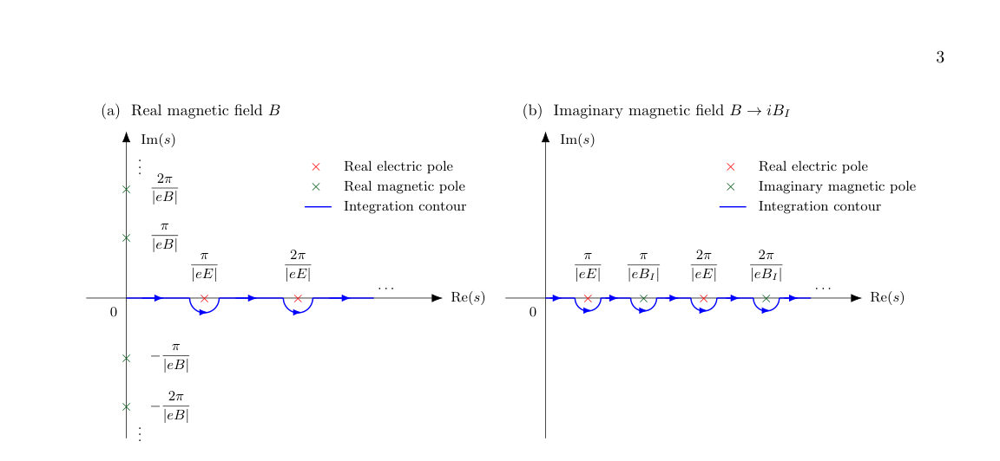
<figcaption class="paper-figure-caption"><b>Fig 1.</b> FIG. 1. Contour prescription for the proper-time integral. (a) For a real magnetic field, the electric E poles lie on the real axis and contribute to the imaginary part of effective Lagrangian through the deformed integration contour, while the magnetic B poles remain on the imaginary axis. (b) After the analytic continuation B →iBI, the magnetic BI poles move onto the real axis and also contribute to the imaginary part.</figcaption>
</figure>
<figure class="paper-figure-card">
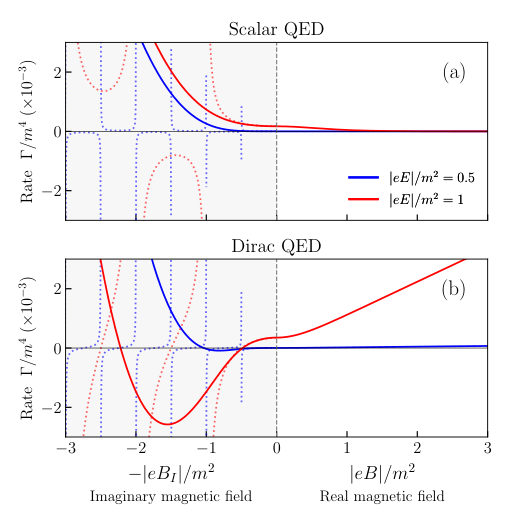
<figcaption class="paper-figure-caption"><b>Fig 2.</b> FIG. 3. The imaginary part of the effective Lagrangian for (a) scalar and (b) Dirac QED as a function of the imaginary (left) and real (right) magnetic fields at fixed |eE|/m2 = 0.5 (blue) and 1 (red). In the imaginary-field region, the solid lines show the full result, including both E- and BI-pole contributions, while the dotted lines show the E-pole contribution alone. A real magnetic field suppresses the scalar result and enhances the Dirac result, whereas the imaginary-field region exhibits nonmonotonic and, for Dirac QED, sign-changing behavior.</figcaption>
</figure>
<figure class="paper-figure-card">
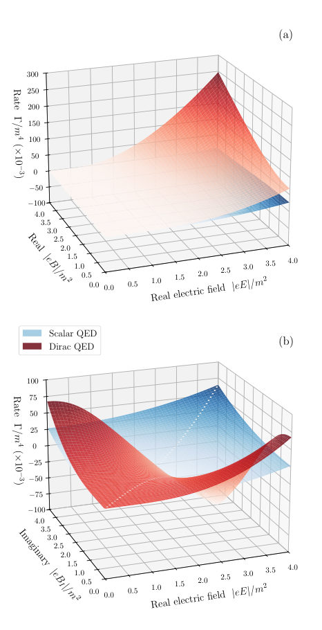
<figcaption class="paper-figure-caption"><b>Fig 3.</b> FIG. 2. The imaginary part of the effective Lagrangian, Γ = 2ImL, for scalar and Dirac QED as functions of the electric and magnetic fields: (a) real magnetic field B and (b) imaginary magnetic field BI.</figcaption>
</figure>
<figure class="paper-figure-card">
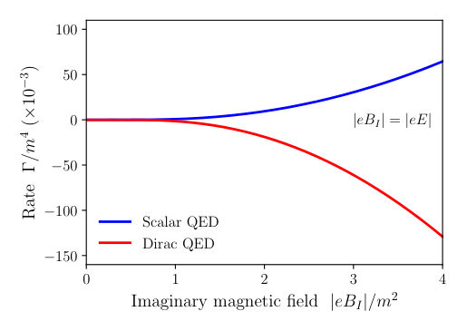
<figcaption class="paper-figure-caption"><b>Fig 4.</b> FIG. 4. The imaginary part of the effective Lagrangian for scalar and Dirac QED along the line of |eE| = |eBI|. The scalar result is positive and increases with the field strength, whereas the Dirac result is negative and satisfies ΓDirac = −2Γscalar.</figcaption>
</figure>
<figure class="paper-figure-card">
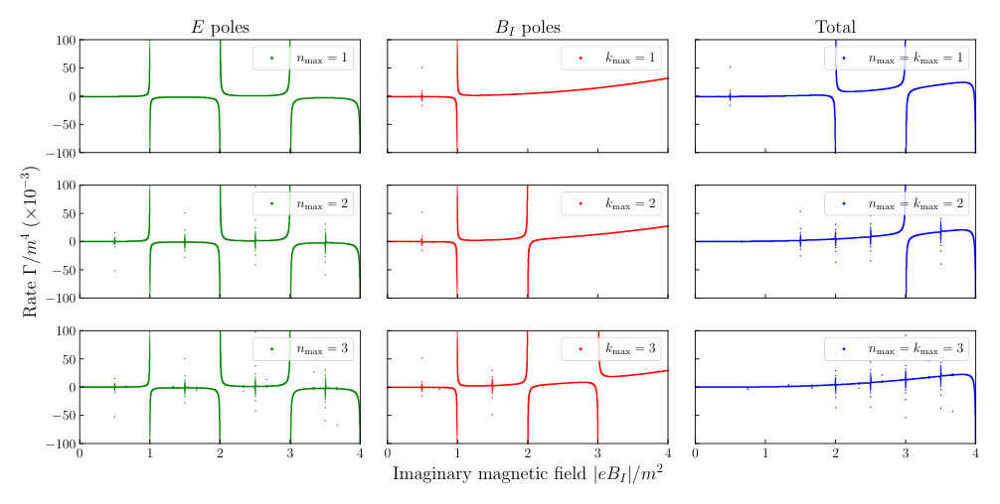
<figcaption class="paper-figure-caption"><b>Fig 5.</b> FIG. 5. Electric-pole (left), imaginary-magnetic-pole (middle), and total (right) contributions to the imaginary part of the effective Lagrangian in scalar QED as functions of the imaginary magnetic field strength |eBI|/m2 at fixed |eE|/m2 = 1. The upper, middle, and lower rows correspond to truncation orders nmax(kmax) = 1, 2, and 3, respectively.</figcaption>
</figure>
</div>

<p><strong>Summary.</strong> This work analyzes the non-Hermitian Schwinger effect in QED using an imaginary magnetic field. The authors find that this field can induce vacuum decay independently of an electric field, a phenomenon not seen with real magnetic fields. The mathematical treatment is complex, requiring careful handling of pole structures depending on the ratio of the applied fields.</p>
<p><strong>Why it may be interesting.</strong> The study of non-Hermitian Hamiltonians and effective Lagrangians is highly relevant to open quantum systems and quantum optics, as non-Hermiticity naturally arises when coupling to an environment or when considering decay processes.</p>
<details>
<summary>Detailed structure</summary>
<p><strong>Main problem.</strong> The paper investigates the non-Hermitian Schwinger effect, analyzing how vacuum instability (pair creation) is modified by the presence of an imaginary magnetic field in conjunction with a real electric field.</p>
<p><strong>Main result.</strong> An imaginary magnetic field can induce vacuum decay even when no electric field is present, and the field dependence of the decay rate exhibits complex sinusoidal-like behavior depending on whether the field ratio is rational or irrational.</p>
<p><strong>Method.</strong> The analysis relies on calculating the one-loop effective Lagrangian using the proper-time representation, requiring careful treatment of pole structures in the integrand.</p>
<p><strong>Model / system.</strong> The system is Scalar and Dirac Quantum Electrodynamics (QED) subjected to combined real electric ($\mathbf{E}$) and imaginary magnetic ($\mathbf{B}_I$) fields.</p>
<p><strong>Key observables.</strong> The imaginary part of the effective Lagrangian ($  ext{Im} L$), which determines the vacuum decay rate ($\Gamma = 2  ext{Im} L$).</p>
<p><strong>Important parameters / regimes.</strong> Electric field strength ($\mathbf{E}$), imaginary magnetic field strength ($\mathbf{B}_I$), and the ratio $\mathbf{B}_I/\mathbf{E}$ (rational vs. irrational).</p>
<p><strong>Assumptions / limitations.</strong> The calculation requires distinguishing between the irrational and rational ratios of the field strengths, as this dictates the pole structure and the need to treat double poles.</p>
<p><strong>Figures summary.</strong> Figures illustrate the contour prescriptions for the proper-time integral, showing how imaginary fields shift poles onto the real axis, and plot the vacuum decay rate ($\Gamma$) in the $(	ext{E}, 	ext{B})$ and $(	ext{E}, 	ext{BI})$ planes.</p>
<p><strong>Paper structure.</strong> The paper progresses by first establishing the general framework for the non-Hermitian Schwinger effect, then detailing the calculation of $   ext{Im} L$ by separating the analysis into the irrational and rational field ratio regimes, and finally deriving the complex Landau-level contributions.</p>
</details>
<details>
<summary>Abstract</summary>
<p>We investigate a non-Hermitian Schwinger effect by analyzing a one-loop effective Lagrangian of scalar and Dirac quantum electrodynamics (QED) in the presence of a real electric field and a parallel imaginary magnetic field. We show that an imaginary magnetic field produces an additional pole family in the integrand of the proper-time representation. Unlike a real magnetic field, an imaginary magnetic field can generate a nonzero imaginary part of the effective Lagrangian even in the absence of an electric field. The interplay between the two fields leads to nontrivial phenomena, such as a cancellation mechanism between the contributions of two fields. We also point out that when the ratio of two field strengths is rational, some poles among the two families coincide, and a careful treatment of double poles is required. By further examining the complex Landau-level structure of the electric-pole contribution, we find that the field dependence of the vacuum decay rate from each Landau level exhibits a sinusoidal-like behavior, and their sum determines the overall field dependence. Our results clarify the analytic structure of the QED effective Lagrangian in imaginary magnetic backgrounds and provide a basis for investigating its relation to non-Hermitian phenomena in the QED vacuum.</p>
</details>
<p><sub><a href="#top">↑ back to top</a></sub></p>

<p><a id="paper-2610.36026"></a></p>
<h3 id="a-correspondence-between-qubit-and-boson-based-sensing-protocols"><a href="http://arxiv.org/abs/2610.36026v1">A Correspondence Between Qubit- and Boson-Based Sensing Protocols</a></h3>
<p><strong>Authors:</strong> Zachary Bogorad, Roni Harnik<br>
<strong>Type:</strong> theory · <strong>Category:</strong> other · <strong>PDF:</strong> <a href="https://arxiv.org/pdf/2610.36026v1">https://arxiv.org/pdf/2610.36026v1</a><br>
<strong>Analysis basis:</strong> full PDF text, analyzed in chunks
<strong>Topic relevance:</strong> <code>analog quantum simulation</code> <strong>3/5</strong> · <code>Tavis-Cummings &amp; cavity-many-emitter</code> <strong>1/5</strong> · <code>quantum optics experiment</code> <strong>1/5</strong></p>
<div class="figure-strip-hint">↔ Scroll figures horizontally</div>
<div class="paper-figures-scroll">
<figure class="paper-figure-card">
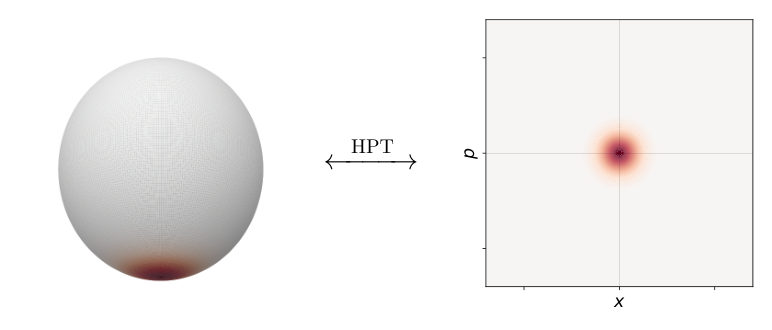
<figcaption class="paper-figure-caption"><b>Fig 1.</b> FIG. 1. Wigner distributions for the south-pole state |0⟩⊗N Q of N qubits (left) and for the bosonic vacuum |0⟩B (right); these map to one another under the HPT. The qubit Wigner distribution is approximately gaussian; this is exact on the boson side. We discuss this mapping in Section III A, while Appendix A presents our Wigner function conventions.</figcaption>
</figure>
<figure class="paper-figure-card">
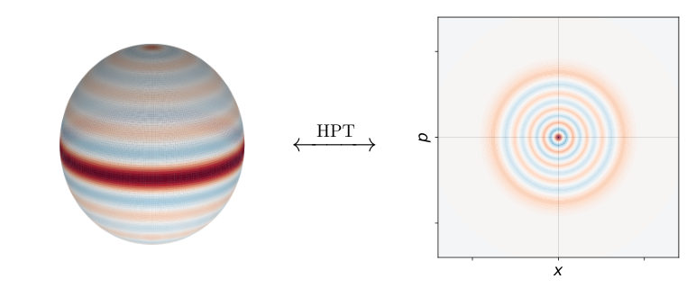
<figcaption class="paper-figure-caption"><b>Fig 2.</b> FIG. 2. Wigner distributions for the permutation-symmetric, half-up state |J = N/2, M = 0⟩Q of N = 16 qubits (left) and for the bosonic state of 8 photons |N/2⟩B (right); these map to one another under the HPT. Both states have definite excitation numbers, and both Wigner functions exhibit circularly symmetric rings of alternating sign. We discuss this mapping in Section III B, while Appendix A presents our Wigner function conventions.</figcaption>
</figure>
<figure class="paper-figure-card">
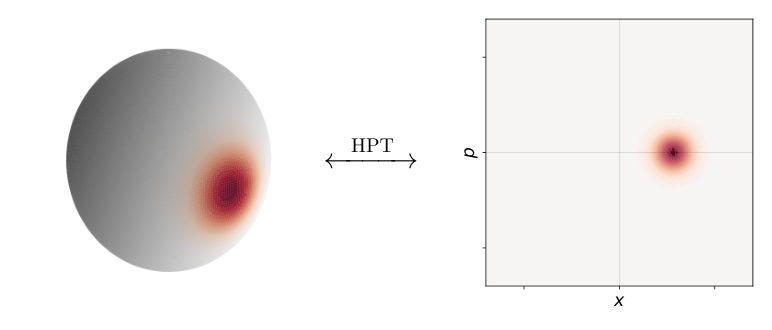
<figcaption class="paper-figure-caption"><b>Fig 3.</b> FIG. 3. Wigner distributions for an example displaced coherent state of qubits (left) and of a bosonic mode (right); these map to one another under the HPT. As in the vacuum (coherent) case, the qubit distribution is approximately gaussian while gaussianity is exact for the bosonic Wigner function. We discuss this mapping in Section III C, while Appendix A presents our Wigner function conventions.</figcaption>
</figure>
<figure class="paper-figure-card">
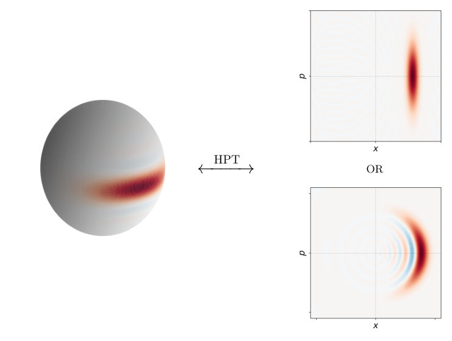
<figcaption class="paper-figure-caption"><b>Fig 4.</b> FIG. 4. Wigner distributions for an example spin-squeezed (along Jz) state of qubits (left) and for two types of squeezing of a bosonic mode (right): x quadrature squeezing (upper-right) and number-squeezing (lower-right). The HPT map in this case is somewhat more ambiguous that in the rest of our examples; see the discussion in Sections III D and IV B 3. Appendix A presents our Wigner function conventions.</figcaption>
</figure>
<figure class="paper-figure-card">
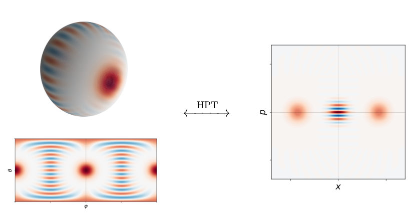
<figcaption class="paper-figure-caption"><b>Fig 5.</b> FIG. 5. Wigner distributions for a qubit GHZ(-2) state aligned with the Jx axis (left) and for a bosonic (2-legged) cat state along the x axis (right); these map to one another under the HPT. For the qubit Wigner function, we additionally include a plot in spherical coordinates (θ, ϕ) to show the entire spherical surface. Both states have two primary lobes at the positions of their component coherent states, as well as interference fringes of alternating sign in between. We discuss this mapping in Section III E, while Appendix A presents our Wigner function conventions.</figcaption>
</figure>
</div>

<p><strong>Summary.</strong> This paper uses the Holstein-Primakoff transformation to create a unified framework connecting quantum sensing protocols in both bosonic and qubit systems. It demonstrates that this correspondence allows for the construction of superior quantum states and establishes generalized theoretical bounds on sensing precision. The work is significant for guiding the development of next-generation quantum sensors.</p>
<p><strong>Why it may be interesting.</strong> It provides a powerful, unifying mathematical tool (HPT) to compare sensing limits across fundamentally different physical platforms (bosons vs. qubits), which is crucial for experimental quantum sensing design.</p>
<details>
<summary>Detailed structure</summary>
<p><strong>Main problem.</strong> The paper aims to establish a unified mathematical correspondence between quantum sensing protocols based on bosonic systems and those based on qubit/qudit systems for searching for physics beyond the Standard Model.</p>
<p><strong>Main result.</strong> The Holstein-Primakoff transformation (HPT) unifies these protocols, revealing novel generalized GHZ states and extending the Hamiltonian-Not-in-Lindblad-Span theorem for bosonic modes.</p>
<p><strong>Method.</strong> The core method is the Holstein-Primakoff transformation (HPT), which maps operators and states between the bosonic Fock space and the symmetric qubit Hilbert space.</p>
<p><strong>Model / system.</strong> The study compares two systems: bosonic sensors (e.g., cavities, squeezed light) and qubit/qudit sensors (e.g., trapped atoms, superconducting circuits). The HPT provides the mathematical bridge between them.</p>
<p><strong>Key observables.</strong> Quantum Fisher Information ($F_{	ext{opt}}^Q$), Wigner functions (bosonic and spin), and the achievable scaling of sensitivity bounds.</p>
<p><strong>Important parameters / regimes.</strong> Number of sensors ($m$), total occupation number ($n$), total spin ($J$), and time ($T$).</p>
<p><strong>Assumptions / limitations.</strong> The analysis relies on the HPT as a mathematical correspondence and examines specific limiting regimes (e.g., South-Pole or Equatorial limits) for simplification.</p>
<p><strong>Figures summary.</strong> Figures illustrate the Wigner distributions for state mappings, specifically showing the correspondence between the vacuum state and the fully polarized state, and between general Fock states and Dicke states.</p>
<p><strong>Paper structure.</strong> The paper reviews the HPT, demonstrates state correspondences (e.g., Fock $\leftrightarrow$ Dicke), discusses sensing implications and scaling analysis, introduces a novel GHZ-4 protocol, and concludes with extensions to the HNLS theorem.</p>
</details>
<details>
<summary>Abstract</summary>
<p>Recent years have seen a surge of interest in adapting non-classical states to search for physics beyond the Standard Model, including both qubit- and boson-based systems. These two classes of systems are closely related through the Holstein--Primakoff transformation (HPT). In this work, we show that the HPT offers novel insights into inherently quantum-mechanical detection of new physics. We begin by discussing how the HPT can be used to unify certain existing qubit- and boson-based proposals in a single framework. We then show how it naturally reveals a novel generalization of GHZ states which offer superior performance for the detection of rare interactions. We demonstrate that these novel states can be readily prepared, and combine the coherent advantage of GHZ states with superior error rejection. Finally, we show that the HPT also reveals a natural extension of the Hamiltonian-Not-in-Lindblad-Span theorem for collections of bosonic modes.</p>
</details>
<p><sub><a href="#top">↑ back to top</a></sub></p>

<p><a id="paper-2610.37589"></a></p>
<h3 id="dynamical-quantum-simulations-as-laboratories-for-quantum-information"><a href="http://arxiv.org/abs/2610.37589v1">Dynamical quantum simulations as laboratories for quantum information</a></h3>
<p><strong>Authors:</strong> Su Yeon Chang, Hailey S. Murray, Brian Barch, Greeshma Oruganti, Luis Pedro García-Pintos, Martin Larocca, Mark M. Wilde, M. Cerezo<br>
<strong>Type:</strong> theory · <strong>Category:</strong> quantum information and computing · <strong>PDF:</strong> <a href="https://arxiv.org/pdf/2610.37589v1">https://arxiv.org/pdf/2610.37589v1</a><br>
<strong>Analysis basis:</strong> full PDF text, analyzed in chunks
<strong>Topic relevance:</strong> <code>analog quantum simulation</code> <strong>3/5</strong> · <code>quantum measurements</code> <strong>2/5</strong></p>
<div class="figure-strip-hint">↔ Scroll figures horizontally</div>
<div class="paper-figures-scroll">
<figure class="paper-figure-card">
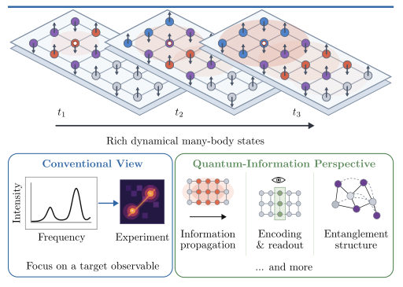
<figcaption class="paper-figure-caption"><b>Fig 1.</b> Figure 1. Schematic representation of our framework. A dynamical quantum simulation prepares a family of rich many-body states as the system evolves. In the conventional view, these states are used to estimate a target dynamical quantity, such as a response function or spectrum that can be compared with experiment. Here we instead take the pre- pared states themselves as objects of study and use them to investigate quantum-information properties such as informa- tion propagation, encoding and readout, and entanglement structure.</figcaption>
</figure>
<figure class="paper-figure-card">
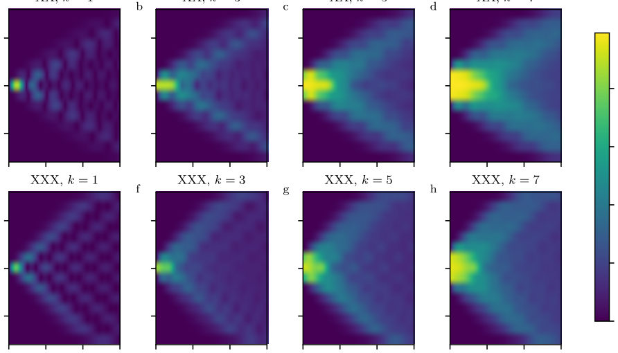
<figcaption class="paper-figure-caption"><b>Fig 2.</b> Figure 2. Trace distance wakes for all observation apertures. Trace distance maps for XX (a-d) and XXX (e-h) at widths k = 1, 3, 5, 7. Every panel uses the same absolute scale. At fixed time and center, the regions are nested, so enlarging the aperture cannot reduce the distinguishability. The maps locate the record over the space-time window.</figcaption>
</figure>
<figure class="paper-figure-card">
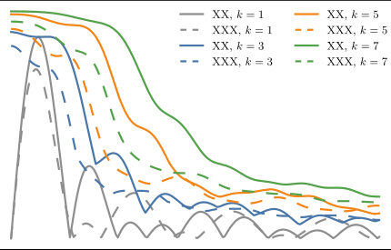
<figcaption class="paper-figure-caption"><b>Fig 3.</b> Figure 3. Trace distance at the source as a function of time for the four observation apertures k = 1, 3, 5, 7. Solid (dashed) lines correspond to the XX (XXX) chain, with colors indicating the aperture size. For k = 1, the trace distance is directly related to the conventional local retarded response through ∆1(t) = 2|GR zz(j0, j0; t)|. Increasing the aperture reveals a substantially larger and longer-lived record of the same perturbation. The more persistent oscillatory structure in XXX follows that of the quantum-wake behavior of the isotropic Heisenberg chain.</figcaption>
</figure>
<figure class="paper-figure-card">
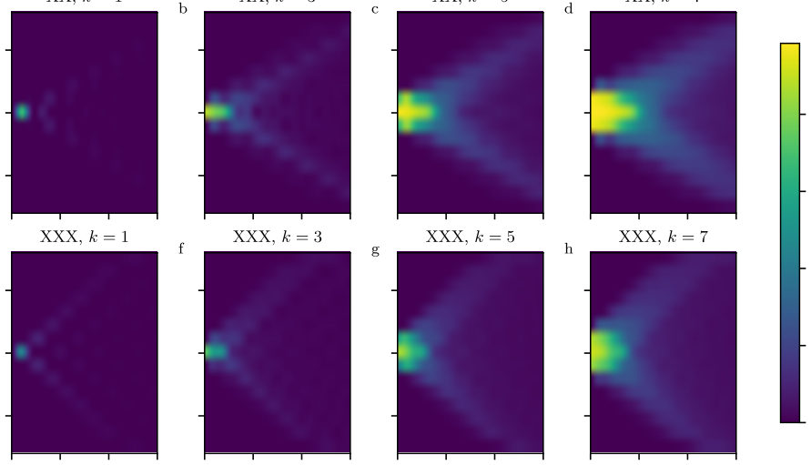
<figcaption class="paper-figure-caption"><b>Fig 4.</b> Figure 4. Holevo-information wakes for all observation apertures. The layout and absolute spatial and temporal scales are the same as in Fig. 2. The same propagating structure is visible, but regions of small distinguishability are strongly suppressed because χR is quadratic in ∆R when the two local branches are close. For k = 1, where ∆1 is proportional to the magnitude of the local retarded Green function, this implies χ1 ∝|GR zz|2 in this regime.</figcaption>
</figure>
<figure class="paper-figure-card">
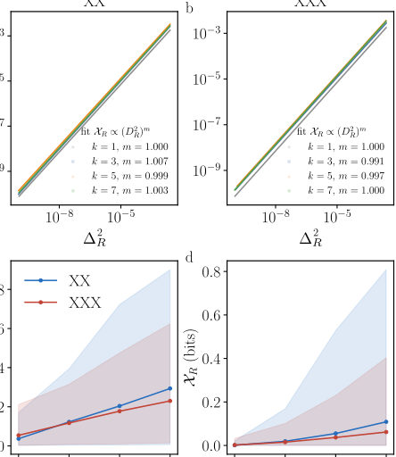
<figcaption class="paper-figure-caption"><b>Fig 5.</b> Figure 5. Weak-signal scaling and aperture dependence of the trace distance and Holevo information. Panels (a) and (b) show XR as a function of ∆2 R for the XX and XXX chains, respectively, restricted to 10−5 ≤∆R ≤0.05. Colors denote the aperture width k, and solid lines show independent power-law fits XR ∝(∆2 R)m. The fitted exponents remain close to m = 1 for every model and aperture, confirming the quadratic scaling XR ∝∆2 R when the two local branches are nearly indistinguishable. Panels (c) and (d) show the median ∆R and XR, respectively, as a function of k, with shaded regions indicating the 5th–95th percentile range over the resolved space-time points. Both quantities increase with...</figcaption>
</figure>
</div>

<p><strong>Summary.</strong> This work proposes viewing dynamical quantum simulations not just as tools to measure specific correlation functions, but as sources of rich quantum information. By analyzing the states prepared during these simulations on spin chains, the authors demonstrate how to extract entanglement measures and communication capacities. This shifts the focus from the measurement target to the inherent quantum resources within the system.</p>
<p><strong>Why it may be interesting.</strong> It provides a powerful, general methodology for extracting deep quantum information—like entanglement structure—from standard, routine measurements in condensed matter simulations, connecting dynamics directly to quantum information theory.</p>
<details>
<summary>Detailed structure</summary>
<p><strong>Main problem.</strong> To reframe dynamical quantum simulations, typically designed for specific response functions, as general 'laboratories' for exploring quantum information properties encoded in the prepared many-body states.</p>
<p><strong>Main result.</strong> The prepared states allow for the direct calculation of quantum information measures like entanglement and communication rates, revealing a separation between state representation and physical readout.</p>
<p><strong>Method.</strong> The authors analyze local-pulse protocols on spin chains, interpreting source rotations as encoding classical bits and quantifying information flow using measures like trace distance and Holevo information.</p>
<p><strong>Model / system.</strong> The study uses local-pulse protocols to compute Green functions in finite XX and XXX spin chains, analyzing the resulting many-body states prepared by the dynamics.</p>
<p><strong>Key observables.</strong> Bipartite and genuine multipartite entanglement, Bell state recovery rates, quantum communication rates, Holevo information ($\chi_R$), and trace distance ($\Delta_R$).</p>
<p><strong>Important parameters / regimes.</strong> The spin chain type (XX vs. XXX), the size of the local observation region ($R$), and the pulse parameters defining the source rotation.</p>
<p><strong>Assumptions / limitations.</strong> The framework assumes that the dynamics prepare a rich family of many-body states that can be interrogated beyond the initially targeted observable.</p>
<p><strong>Figures summary.</strong> Figure 1 schematically contrasts the conventional view (measuring a target observable) with the proposed view (using prepared states for information analysis).</p>
<p><strong>Paper structure.</strong> The paper progresses from establishing the conceptual shift (from observable to state) to applying this framework to specific spin chain models (XX/XXX), and finally extending the analysis to general quantum information measures like entanglement and capacity.</p>
</details>
<details>
<summary>Abstract</summary>
<p>Dynamical quantum simulations are commonly designed to access a particular response function or correlation function. Yet the underlying protocol prepares a family of many-body states that contains information well beyond the observable for which the simulation was originally designed. In this work, we explore the idea of using these states as laboratories for quantum information. As a case study, we consider the local-pulse protocols used to compute Green functions in finite XX and XXX spin chains, and we interpret opposite source rotations as encoding a classical bit into the many-body system. This allows us to follow how the resulting record propagates, how it is encoded across local subsystems, and how readily it can be accessed with different measurements. We also find a clear separation between representation and readout. While fermionic covariance data exactly reconstruct the signed response in the XX chain, simple spin measurements recover a larger fraction of the locally available information in the XXX chain. This reversed ordering persists when we move from finite-pulse discrimination to local source-angle estimation. Going beyond the source record, the same reduced states also allow us to reinterpret results in terms of Bell state recovery and quantum communication rates, as well as providing direct access to the evolving bipartite and genuine multipartite entanglement of the system. Our results show that dynamical quantum simulations developed for response calculations can naturally be used to ask a much broader set of quantum-information questions about the many-body states they already prepare.</p>
</details>
<p><sub><a href="#top">↑ back to top</a></sub></p>

<p><a id="paper-2610.36113"></a></p>
<h3 id="scaling-and-renormalization-in-neural-networks-an-effective-renormalization-group-description-of-grokking"><a href="http://arxiv.org/abs/2610.36113v1">Scaling and Renormalization in Neural Networks: An Effective Renormalization-Group Description of Grokking</a></h3>
<p><strong>Authors:</strong> Min Chen, Junqi Wang, Zeguan Wu, Wenhao Huang, Junyu Liu<br>
<strong>Type:</strong> theory · <strong>Category:</strong> statistical mechanics · <strong>PDF:</strong> <a href="https://arxiv.org/pdf/2610.36113v1">https://arxiv.org/pdf/2610.36113v1</a><br>
<strong>Analysis basis:</strong> full PDF text, analyzed in chunks
<strong>Topic relevance:</strong> <code>non-equilibrium universality</code> <strong>3/5</strong> · <code>driven-dissipative phase transition</code> <strong>1/5</strong></p>
<div class="figure-strip-hint">↔ Scroll figures horizontally</div>
<div class="paper-figures-scroll">
<figure class="paper-figure-card">
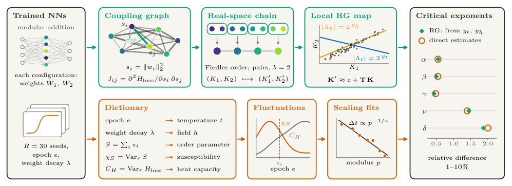
<figcaption class="paper-figure-caption"><b>Fig 1.</b> Figure 1: Overview. From trained NNs (left), the critical exponents of grokking are obtained via two complementary routes. RG route (top): each hidden neuron carries a spin si, its squared weight norm, while each neuron pair is connected by a coupling Jij derived from the loss Hessian. Ordering the neurons on a chain using the Fiedler vector of this coupling graph enables adjacent neurons to be merged into blocks, where a linear fit of the coarsened couplings yields yt and yh, from which five critical exponents follow (Sections 3.2–3.3). Direct route (bottom): a physical dictionary uses the training epoch as an effective temperature, weight decay as conjugate field, and ensemble...</figcaption>
</figure>
<figure class="paper-figure-card">
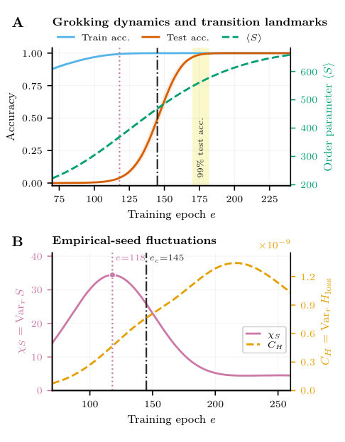
<figcaption class="paper-figure-caption"><b>Fig 2.</b> Figure 2: Ensemble dynamics. (A) Train and test accuracy and the order parameter ⟨S⟩over the 30 runs. (B) Susceptibility χS = Varr S and heat-capacity proxy CH = Varr Hloss. The dotted line marks the χS peak at e = 118; the dash-dotted line marks ec = 145.</figcaption>
</figure>
<figure class="paper-figure-card">
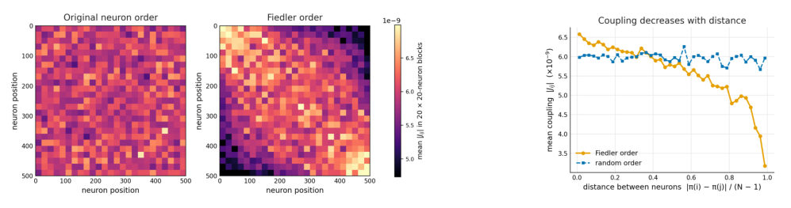
<figcaption class="paper-figure-caption"><b>Fig 3.</b> Figure 3: Validation of the constructed real space at ec = 145. Left pair: |Jij| averaged over 20 × 20-neuron blocks, in the original neuron order and after Fiedler ordering, on a common colour scale. Right: mean |Jij| between neuron pairs at a given normalized Fiedler distance, compared with a random ordering of the same matrix.</figcaption>
</figure>
<figure class="paper-figure-card">
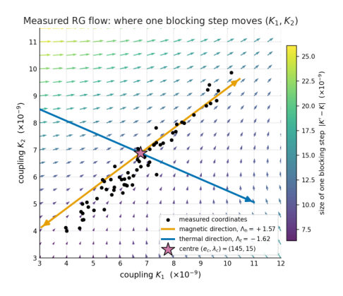
<figcaption class="paper-figure-caption"><b>Fig 4.</b> Figure 4: The measured local RG flow. Colour gives the size of the step. Black dots are the 65 measured coordinates. The orange and blue lines are the magnetic and thermal eigendirections of T; both point away from the center because |Λ| &gt; 1. The star is the grokking center (ec, λc) = (145, 15). The regression that produced T is shown in Figure 9 (Appendix E).</figcaption>
</figure>
<figure class="paper-figure-card">

<figcaption class="paper-figure-caption"><b>Fig 5.</b> Figure 4 illustrates the RG flow. Each point of the plane is a pair of couplings (K1, K2), and each arrow shows where one blocking step moves that point. The black dots are the 65 measured coordinates. The matrix T gives its two eigendirections drawn as the orange and blue lines through the grokking center. Two points that differ along the orange (magnetic) line are 1.57 times farther apart after each step. Two points that differ along the blue (thermal) line are 1.62 times farther apart after each step, and their order along the line is reversed, which is the meaning of the negative sign of Λt. A difference in any other direction is a combination of these two. Differences therefore grow in...</figcaption>
</figure>
</div>

<p><strong>Summary.</strong> This paper applies Renormalization Group (RG) theory, traditionally used for phase transitions, to model 'grokking'—the delayed generalization in neural networks. By mapping training dynamics onto a statistical physics Hamiltonian, the authors derive critical exponents that successfully describe the transition, establishing a quantitative physical framework for NN generalization.</p>
<p><strong>Why it may be interesting.</strong> The application of rigorous critical phenomena tools (RG, scaling laws) to the non-equilibrium dynamics of machine learning models provides a powerful, physics-based lens for understanding generalization.</p>
<details>
<summary>Detailed structure</summary>
<p><strong>Main problem.</strong> To determine if scaling and Renormalization Group (RG) theories can provide a quantitative physical framework to describe "grokking"—the delayed transition from memorization to generalization in deep neural networks (NNs).</p>
<p><strong>Main result.</strong> The framework provides a consistent effective description of grokking, showing that critical exponents derived from the RG approach match empirical estimates from NN training dynamics within 1-10%.</p>
<p><strong>Method.</strong> The authors construct an effective Hamiltonian and apply real-space RG techniques, mapping NN training dynamics onto established critical phenomena scaling laws.</p>
<p><strong>Model / system.</strong> The system is a deep neural network (specifically, a two-layer perceptron trained on modular addition), whose dynamics are mapped onto a lattice spin model where training epochs act as inverse temperature and weight decay acts as a field.</p>
<p><strong>Key observables.</strong> Order parameter (squared weight norm), Susceptibility ($\chi_S$), Heat Capacity ($C_H$), and critical exponents ($\alpha, eta, \gamma, 
u, \delta$).</p>
<p><strong>Important parameters / regimes.</strong> Training epoch ($e$), weight decay ($\lambda$), and the effective spatial dimension ($d=1$) derived from the Fiedler vector ordering.</p>
<p><strong>Assumptions / limitations.</strong> The primary assumptions involve mapping thermodynamic quantities (like variance of loss) to physical observables and assuming that the coupling structure can be effectively ordered into a 1D chain using spectral methods.</p>
<p><strong>Figures summary.</strong> Figures illustrate the complementary routes to critical exponent determination (RG vs. Dictionary), show the spectral ordering of couplings, and display the parameter cloud mapping between RG coordinates and observed training parameters.</p>
<p><strong>Paper structure.</strong> The paper first establishes a 'physical dictionary' mapping NN observables to thermodynamic quantities. It then develops the RG framework by constructing a coupling matrix via loss expansion and ordering it using the Fiedler vector. Finally, it executes real-space RG and derives scaling exponents, comparing them to direct estimates.</p>
</details>
<details>
<summary>Abstract</summary>
<p>Grokking is a delayed transition from memorization to generalization in deep neural networks (NNs). We examine whether scaling and renormalization group (RG) theories can describe this dynamics, establishing a quantitative physical framework for neural generalization transitions. For modular addition on a two-layer NN, an ensemble of trained models defines an order parameter (the squared weight norm) and fluctuation proxies for the heat capacity and the susceptibility, with training epoch and weight decay serving as thermal and field control coordinates. To bridge neural architectures to real-space RG, we construct an exact coupling matrix via a second-order expansion of the loss with respect to per-neuron norms and use its Fiedler vector to define an effective geometry. This spectral ordering yields a monotonic spatial decay of coupling strength that is absent under random permutations. We then execute real-space RG by block-spin aggregating adjacent neurons and parameterizing the coupling matrix into off-diagonal band strengths. Linearizing this local RG map yields relevant scaling exponents and five derived critical exponents, with direct empirical estimates matching RG predictions within 1-10%. Overall, our framework provides a consistent effective description of grokking, suggesting the scaling and renormalization group formalism as a tool to investigate NN dynamics.</p>
</details>
<p><sub><a href="#top">↑ back to top</a></sub></p>

<p><a id="paper-2610.36886"></a></p>
<h3 id="spin-polarized-tunneling-from-a-kondo-insulator-equilibrium-surface-magnetism-versus-magneto-electric-response-in-smbmath317math"><a href="http://arxiv.org/abs/2610.36886v1">Spin-polarized tunneling from a Kondo insulator: equilibrium surface magnetism versus magneto-electric response in SmB$_6$</a></h3>
<p><strong>Authors:</strong> Maxim Dzero, Brian M. Andersen<br>
<strong>Type:</strong> theory · <strong>Category:</strong> strongly correlated electrons · <strong>PDF:</strong> <a href="https://arxiv.org/pdf/2610.36886v1">https://arxiv.org/pdf/2610.36886v1</a><br>
<strong>Analysis basis:</strong> full PDF text, analyzed in chunks
<strong>Topic relevance:</strong> <code>Keldysh / 2PI / non-Gaussian methods</code> <strong>3/5</strong> · <code>quantum measurements</code> <strong>1/5</strong></p>
<div class="figure-strip-hint">↔ Scroll figures horizontally</div>
<div class="paper-figures-scroll">
<figure class="paper-figure-card">
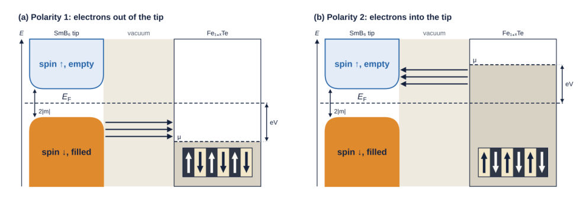
<figcaption class="paper-figure-caption"><b>Fig 1.</b> FIG. 1. Schematic representation for the microscopic origin of the bias reversal of the magnetic contrast for a spin-polarized apex in equilibrium [27]. The time-reversal-breaking surface order splits the apex states at the Fermi level EF into a filled spin-↓band below EF and an empty spin-↑band above it, separated by 2|m| (left part of each panel). The Fe1+xTe substrate is an antiferromagnet whose chemical potential µ is shifted by the bias eV relative to EF . (a) For one polarity electrons leave the tip: the current is carried by the filled spin-↓states of the apex into empty substrate states, so the contrast is set by the spin- ↓spectral weight at EF −eV . (b) For the opposite polarity...</figcaption>
</figure>
<figure class="paper-figure-card">

<figcaption class="paper-figure-caption"><b>Fig 2.</b> FIG. 2. Field-induced change of the spin-resolved spectral function of the apex due to the order-parameter channel, X∆(ω), Eq. (21), convolved with the thermal factor −∂f/∂ω at three different temperatures T = 5.2, 7.2 and 8.5 K with Tc ≈9.8 K. The results are shown per millivolt of bias for the unscreened field (κ = 1) at the tip–substrate distance d = 7 ˚A, with ℓs = 0.021 ˚A and zdf = 0.1 ˚A. Per millivolt of bias X∆is smaller than the equilibrium spectrum ρs by three to four orders of magnitude.</figcaption>
</figure>
<figure class="paper-figure-card">

<figcaption class="paper-figure-caption"><b>Fig 3.</b> FIG. 3. Magnetic contrast part of the differential tunneling conductance, ρspin(V ) = gspin(V )/e, Eq. (7), as a function of ω = eV at T = 5.2, 7.2 and 8.5 K. The field-induced contribu- tion is that of the order-parameter channel X∆, Fig. 2, for the unscreened field at d = 7 ˚A and Vc = 0. On the scale of the figure, the curves coincide with the equilibrium contribution gs(V )/e: the field-induced correction does not exceed 1% of the equilibrium part at any of the three temperatures.</figcaption>
</figure>
</div>

<p><strong>Summary.</strong> This theoretical work investigates spin-polarized tunneling from the Kondo insulator $ ext{SmB}_6$ to separate the effects of intrinsic surface magnetism from field-induced magneto-electric coupling. By analyzing the tunneling conductance, the authors show that at low biases, the equilibrium magnetic order dominates the observed contrast, suggesting that the magneto-electric effect only becomes comparable at much higher bias voltages.</p>
<p><strong>Why it may be interesting.</strong> The detailed separation of equilibrium magnetic order from field-induced magneto-electric effects in a strongly correlated material like a Kondo insulator provides a rigorous theoretical tool for interpreting complex transport measurements in correlated electron systems.</p>
<details>
<summary>Detailed structure</summary>
<p><strong>Main problem.</strong> The paper theoretically analyzes spin-polarized tunneling from a Kondo insulator ($   ext{SmB}_6$) to distinguish between the contribution of equilibrium surface magnetism and the magneto-electric response.</p>
<p><strong>Main result.</strong> Within small bias windows ($|eV| \lesssim 10 	ext{ meV}$), the field-induced magneto-electric contribution is found to be negligible compared to the equilibrium contribution, which primarily dictates the energy dependence and bias reversal of the magnetic contrast.</p>
<p><strong>Method.</strong> The analysis uses linear response theory and perturbation theory applied to the tunneling conductance, expanding the spin-resolved spectral function to first order in the electric field.</p>
<p><strong>Model / system.</strong> The system involves spin-polarized tunneling between an $   ext{SmB}<em 1_x="1+x">6$ tip (a Kondo insulator candidate) and an $  ext{Fe}</em>_6$.}   ext{Te}$ substrate. The theory models the magnetic contrast using an eight-orbital description for $    ext{SmB</p>
<p><strong>Key observables.</strong> Magnetic contrast in the tunneling conductance, the ratio of equilibrium moment to field-induced response, and the bias dependence of the contrast.</p>
<p><strong>Important parameters / regimes.</strong> Bias voltage ($V$), tip-substrate distance ($d$), and energy scales ($\sim 10 	ext{ meV}$ vs. $\sim 100 	ext{ meV}$).</p>
<p><strong>Assumptions / limitations.</strong> The analysis assumes the electric field perturbation is small compared to the static contact potential, and that the energy dependence of the spectral function is smooth over the apex structure energy scale.</p>
<p><strong>Figures summary.</strong> Figure 1 schematically illustrates how time-reversal symmetry breaking causes the apex states to split, leading to a bias-dependent tunneling contrast that changes sign.</p>
<p><strong>Paper structure.</strong> The paper establishes the physical context (spin-polarized tunneling, TRSB), derives the theoretical framework by expanding the spectral function to linear order in the electric field, and then calculates and compares the magnitude of the equilibrium versus the field-induced contributions.</p>
</details>
<details>
<summary>Abstract</summary>
<p>We theoretically analyze the spin-polarized tunneling between SmB$_6$ tip and the bicollinear antiferromagnet Fe$_{1+x}$Te. The emergence of magnetic contrast in tunneling requires time-reversal symmetry breaking on the surface of the tip. The magnetic contrast part of the tunneling conductance then has two contributions: the first one originates from the magnetic moment due to the equilibrium long-range order on the surface, while the other is governed by the magnetic moment induced by the electric field of the junction through the surface magneto-electric effect. We show that the ratio of the equilibrium moment to the response extracted near zero bias equals, up to the sign, twice the bias at which the contrast changes sign, independently of the relative strength of the two mechanisms, so that this ratio itself does not measure the strength of the magneto-electric effect. We find that within the experimental energy window $|eV|\lesssim10$~meV the {bias-dependent} field-induced contribution is at most a few percent of the equilibrium one, and the two become comparable only at biases of order $100$~meV or higher. The ratio of the field-induced to the equilibrium contribution is inversely proportional to the distance between the tip and the substrate.</p>
</details>
<p><sub><a href="#top">↑ back to top</a></sub></p>

<p><a id="paper-2610.36391"></a></p>
<h3 id="consensus-and-information-redistribution-in-quantum-networks"><a href="http://arxiv.org/abs/2610.36391v1">Consensus And Information Redistribution In Quantum Networks</a></h3>
<p><strong>Authors:</strong> J. Novotný, D. Štěrba, I. Jex, H. -H. Kowalski, A. Abedi<br>
<strong>Type:</strong> theory · <strong>Category:</strong> quantum information and computing · <strong>PDF:</strong> <a href="https://arxiv.org/pdf/2610.36391v1">https://arxiv.org/pdf/2610.36391v1</a><br>
<strong>Analysis basis:</strong> full PDF text, analyzed in chunks
<strong>Topic relevance:</strong> <code>quantum measurements</code> <strong>3/5</strong></p>
<div class="figure-strip-hint">↔ Scroll figures horizontally</div>
<div class="paper-figures-scroll">
<figure class="paper-figure-card">

<figcaption class="paper-figure-caption"><b>Fig 1.</b> Fig. 1. Graphical comparison of classical and quantum average con- sensus. The classical protocol iteratively converges to the average of the initial node values, while the quantum protocol uses random unitary op- erations to reach a permutation-symmetric state. Local measurements estimate the average excitation, while collective measurements on m qubits provide access to moments of the excitation-number distribution up to order m.</figcaption>
</figure>
<figure class="paper-figure-card">

<figcaption class="paper-figure-caption"><b>Fig 2.</b> Fig. 2. Example of a quantum network with 5 qudits driven by random unitary interaction.</figcaption>
</figure>
<figure class="paper-figure-card">

<figcaption class="paper-figure-caption"><b>Fig 3.</b> Fig. 3. Formation of quantum consensus in a fully connected 5-qubit CNOT network, each CNOT applied with probability pe = 0.05. The initial state is |ϕ &gt;= 1/ √</figcaption>
</figure>
<figure class="paper-figure-card">

<figcaption class="paper-figure-caption"><b>Fig 4.</b> Fig. 4. Formation of quantum consensus in a fully connected 5-qubit CNOT network, each CNOT applied with probability pe = 0.05. The initial state is |ϕ &gt;= 1/ √</figcaption>
</figure>
<figure class="paper-figure-card">

<figcaption class="paper-figure-caption"><b>Fig 5.</b> Fig. 5. Formation of quantum consensus in a fully connected 5-qubit CNOT network, each CNOT applied with probability pe = 0.05. The initial state is |ϕ &gt;= 1/ √</figcaption>
</figure>
</div>

<p><strong>Summary.</strong> This work develops a theoretical framework for understanding quantum consensus in networks driven by random unitary dynamics. It shows that global information can be systematically extracted from local measurements by analyzing the moments of the excitation-number distribution. This advances the understanding of information processing in quantum networks beyond simple state reconstruction.</p>
<p><strong>Why it may be interesting.</strong> It provides a rigorous theoretical framework for understanding information flow and measurement limitations in complex, interacting quantum systems, which is highly relevant to quantum communication and computation.</p>
<details>
<summary>Detailed structure</summary>
<p><strong>Main problem.</strong> The paper investigates how consensus algorithms in quantum networks redistribute global quantum information, allowing global properties to be inferred from local measurements without reconstructing the full global state.</p>
<p><strong>Main result.</strong> A general theorem establishes a unified framework for extracting globally encoded information from local measurements, showing that joint measurements on k nodes recover the first k moments of the excitation-number distribution.</p>
<p><strong>Method.</strong> The analysis uses the attractor formalism applied to discrete random unitary dynamics to characterize the asymptotic behavior of the quantum network.</p>
<p><strong>Model / system.</strong> The system is a qudit network (d-dimensional Hilbert space) whose dynamics are governed by discrete random unitary interactions. Specific models analyzed include CNOT networks and general two-qubit interactions.</p>
<p><strong>Key observables.</strong> Quantum consensus states, global information, local measurements, moments of the excitation-number distribution, and the reduced state $
ho_i$.</p>
<p><strong>Important parameters / regimes.</strong> The number of nodes (n), the dimension of the qudits (d), and the specific unitary interaction structure.</p>
<p><strong>Assumptions / limitations.</strong> The analysis relies on the attractor framework for random unitary operations and assumes the dynamics can be modeled by random unitary evolution.</p>
<p><strong>Figures summary.</strong> Figure 1 compares classical and quantum average consensus, showing the quantum protocol reaches a permutation-symmetric state. Other figures illustrate the network structure and dynamics.</p>
<p><strong>Paper structure.</strong> The paper progresses by defining various forms of quantum consensus (e.g., $\sigma$EC, RSC, SSC), analyzing the asymptotic dynamics using random unitaries, and culminating in a general theorem that links joint local measurements to the recovery of global moments.</p>
</details>
<details>
<summary>Abstract</summary>
<p>Consensus algorithms are mechanisms driving nodes of a network to agreement. In quantum networks they also redistribute information encoded in the global quantum state, allowing global properties to be inferred from local measurements without reconstructing the global state. Motivated by this, we investigate decentralized quantum consensus in qudit networks governed by discrete random unitary dynamics. We characterize the analytic asymptotic dynamics, identify global information preserved by the evolution, and derive conditions for which different notions of quantum consensus emerge. A general theorem is derived that establishes a unified framework for extracting globally encoded information from local measurements beyond consensus states. First, we analyze CNOT networks and determine which global information can be recovered by individual nodes and which requires joint measurements on cooperating nodes. The CNOT model is well understood and presents a case with entanglement creation - a characteristic quantum feature of networks worth analyzing in detail. Second, we identify the complete class of two-qubit interactions that asymptotically achieve consensus on the average number of excitations, thereby establishing a quantum analogue of classical average consensus. We further show that joint measurements on k cooperating nodes recover exactly the first k moments of the excitation-number distribution.</p>
</details>
<p><sub><a href="#top">↑ back to top</a></sub></p>

<p><a id="paper-2610.36974"></a></p>
<h3 id="impurity-induced-trimer-formation-across-the-bcs-bec-crossover"><a href="http://arxiv.org/abs/2610.36974v1">Impurity-induced trimer formation across the BCS-BEC crossover</a></h3>
<p><strong>Authors:</strong> M. C. Gordillo, J. Boronat<br>
<strong>Type:</strong> theory · <strong>Category:</strong> quantum gases · <strong>PDF:</strong> <a href="https://arxiv.org/pdf/2610.36974v1">https://arxiv.org/pdf/2610.36974v1</a><br>
<strong>Analysis basis:</strong> full PDF text, analyzed in chunks
<strong>Topic relevance:</strong> <code>analog quantum simulation</code> <strong>3/5</strong></p>
<div class="figure-strip-hint">↔ Scroll figures horizontally</div>
<div class="paper-figures-scroll">
<figure class="paper-figure-card">

<figcaption class="paper-figure-caption"><b>Fig 1.</b> FIG. 1. Total energy of the system as a function of −1/(kF a12) (a12 being the scattering length between the two- baths species) formed by two baths and no impurity across the BEC-BCS crossover, obtained using the P¨oschl-Teller po- tential (open circles). Results obtained with a square-well potential in Ref. 7 (PRL 2004, full circles) are included for comparison. Here, EF is the energy of two non-interacting Fermi baths. In the BEC branch, the total energy is cor- rected by subtracting the binding energy of all the N pairings between atoms belonging to different baths, Nǫb, which is zero in the BCS branch.</figcaption>
</figure>
<figure class="paper-figure-card">

<figcaption class="paper-figure-caption"><b>Fig 2.</b> FIG. 2. Same as in Fig. 1, but for a system including an impurity interacting with the particles in both baths with dif- ferent strengths, or equivalently with different negative scat- tering lengths. The error bars are of the size of the symbols and not displayed for simplicity. The corresponding scatter- ing lengths are (from lowest to highest displayed V13 values) a13= -0.54µ−1 13 , -2.89µ−1 13 , -4.62µ−1 13 , -8.64µ−1 13 ,-28.66µ−1 13 , -∞, respectively.</figcaption>
</figure>
<figure class="paper-figure-card">

<figcaption class="paper-figure-caption"><b>Fig 3.</b> FIG. 3. Energy of a system containing three isolated atoms, ǫT , in units of ǫ0. The error bars are smaller than the size of the symbols.The solid line corresponds to the two-body binding energy obtained from Eq. 10.</figcaption>
</figure>
<figure class="paper-figure-card">

<figcaption class="paper-figure-caption"><b>Fig 4.</b> FIG. 4. Energy of the system including the impurity and the two baths, after subtracting the binding energy of N-1 (1, 2) pairs and one trimer in the impurity-bath unitary limit (full circles). The energy of the two baths without impurity, under the same conditions as in Fig. 1, is also shown for comparison (open circles). The error bars are of similar size in both cases and, for clarity, are displayed only for the latter.</figcaption>
</figure>
<figure class="paper-figure-card">

<figcaption class="paper-figure-caption"><b>Fig 5.</b> FIG. 6. Average interparticle distances in the isolated trimer (squares) and in the trimer embedded in the two Fermi baths (circles), in the impurity-bath unitary limit. When not shown, the error bars are comparable to the ones displayed.</figcaption>
</figure>
</div>

<p><strong>Summary.</strong> This theoretical study uses Diffusion Monte Carlo simulations to examine how a single impurity affects two interacting Fermi baths as the system transitions from the BCS to the BEC regime. The research demonstrates the formation of stable, genuine three-body clusters (trimers) whose structure changes character across the crossover. This provides crucial insight into multi-body physics beyond simple pair correlations in ultracold atomic gases.</p>
<p><strong>Why it may be interesting.</strong> This work provides a detailed, microscopic understanding of three-body correlations in strongly interacting quantum gases, bridging the gap between simple pairing (dimers) and genuine multi-body physics across a fundamental quantum phase transition.</p>
<details>
<summary>Detailed structure</summary>
<p><strong>Main problem.</strong> The study investigates the formation of impurity-induced trimer clusters as a system of two interacting Fermi baths crosses the BCS-BEC crossover.</p>
<p><strong>Main result.</strong> The authors confirm the formation of genuine three-body clusters (trimers) that evolve from Borromean structures on the BCS side to tango-like structures on the BEC side.</p>
<p><strong>Method.</strong> The primary computational tool used is the Fixed-Node Diffusion Monte Carlo (FN-DMC) method to calculate ground state energies.</p>
<p><strong>Model / system.</strong> The model consists of a single impurity embedded in two balanced Fermi baths, interacting via attractive Pöschl-Teller potentials. The system's behavior is mapped across the BCS-BEC crossover by varying the bath-bath interaction strength.</p>
<p><strong>Key observables.</strong> Trimer binding energy ($\epsilon_T$), residual energy ($\Delta E$), and interparticle distances ($\langle r_{ij} 
angle$).</p>
<p><strong>Important parameters / regimes.</strong> The BCS-BEC crossover parameter (related to bath-bath interaction strength), and the relative strengths of impurity-bath interactions ($V_{13}$).</p>
<p><strong>Assumptions / limitations.</strong> Intra-particle interactions are neglected, and the analysis relies on the fixed-node approximation inherent to the DMC method.</p>
<p><strong>Figures summary.</strong> Figures compare total energy vs. interaction strength, showing the effect of the impurity; they also compare isolated trimer energy vs. dimer binding energy, and plot residual energy to confirm the cluster model.</p>
<p><strong>Paper structure.</strong> The paper systematically analyzes the energy landscape across the crossover, first establishing the general framework using DMC, then focusing on the energy difference ($\Delta E$) to confirm the cluster nature, and finally analyzing the geometry via interparticle distances.</p>
</details>
<details>
<summary>Abstract</summary>
<p>By means of diffusion Monte Carlo calculations, we study the behavior of a single impurity embedded in two balanced Fermi baths across the BCS-BEC crossover. The impurity interacts attractively with both baths through Pöschl-Teller potentials of different strengths. That interaction is such that does not support an impurity--bath two-body bound state. When that attraction is sufficiently strong, we observe the formation of trimers composed of the impurity and one atom from each bath. These clusters are Borromean on the BCS side, where no two-body subsystem is bound, and evolve continuously into tango-like trimers on the BEC side. Subtracting from the total energy the binding energy of one trimer and that of the remaining bath-bath dimers restores the equation of state of the impurity-free system, supporting a dilute-cluster interpretation. The analysis of interparticle distances shows that the embedded trimer is not simply a dimer dressed by the impurity, but a genuine three-body cluster formed inside the two Fermi baths.</p>
</details>
<p><sub><a href="#top">↑ back to top</a></sub></p>

<p><a id="paper-2610.37347"></a></p>
<h3 id="measurement-incompatibility-and-noiseless-quantum-codes"><a href="http://arxiv.org/abs/2610.37347v1">Measurement incompatibility and noiseless quantum codes</a></h3>
<p><strong>Authors:</strong> Yu-Xuan Zhang, Jing-Ling Chen<br>
<strong>Type:</strong> theory · <strong>Category:</strong> quantum information and computing · <strong>PDF:</strong> <a href="https://arxiv.org/pdf/2610.37347v1">https://arxiv.org/pdf/2610.37347v1</a><br>
<strong>Analysis basis:</strong> full PDF text, analyzed in chunks
<strong>Topic relevance:</strong> <code>quantum measurements</code> <strong>3/5</strong></p>
<div class="figure-strip-hint">↔ Scroll figures horizontally</div>
<div class="paper-figures-scroll">
<figure class="paper-figure-card">

<figcaption class="paper-figure-caption"><b>Fig 1.</b> Low-resolution page preview, page 2</figcaption>
</figure>
<figure class="paper-figure-card">

<figcaption class="paper-figure-caption"><b>Fig 2.</b> Low-resolution page preview, page 3</figcaption>
</figure>
<figure class="paper-figure-card">

<figcaption class="paper-figure-caption"><b>Fig 3.</b> Low-resolution page preview, page 4</figcaption>
</figure>
<figure class="paper-figure-card">

<figcaption class="paper-figure-caption"><b>Fig 4.</b> Low-resolution page preview, page 5</figcaption>
</figure>
</div>

<p><strong>Summary.</strong> This theoretical paper establishes a fundamental equivalence: a quantum channel preserves measurement incompatibility if and only if the input space contains a noiseless code subspace. It resolves major open conjectures by connecting measurement compatibility directly to the requirements for quantum error correction, providing explicit constructions and error bounds.</p>
<p><strong>Why it may be interesting.</strong> It establishes a deep, quantitative link between fundamental concepts like measurement compatibility, quantum steering, and the existence of error-correcting codes, which is central to quantum information theory.</p>
<details>
<summary>Detailed structure</summary>
<p><strong>Main problem.</strong> The paper investigates the necessary and sufficient conditions for a quantum channel to universally preserve the property of measurement incompatibility.</p>
<p><strong>Main result.</strong> Universal preservation of measurement incompatibility is equivalent to the input space containing a noiseless code subspace of the full output dimension, resolving key conjectures in the field.</p>
<p><strong>Method.</strong> The authors use advanced concepts from quantum information theory, including constructing rank-one Minimal Informationally Complete Measurements (MICs) and relating incompatibility to quantum steering.</p>
<p><strong>Model / system.</strong> The study focuses on abstract quantum channels ($\Lambda: D 	o d$) acting on quantum states, analyzing the compatibility of finite families of quantum measurements.</p>
<p><strong>Key observables.</strong> Measurement incompatibility/compatibility, noiseless code subspace existence, and the compatibility threshold.</p>
<p><strong>Important parameters / regimes.</strong> The dimension of the input/output spaces ($D, d$), and the shift parameter ($\delta$) used in error bounding.</p>
<p><strong>Assumptions / limitations.</strong> The analysis relies on the mathematical framework of quantum channels and the properties of informationally complete measurements.</p>
<p><strong>Paper structure.</strong> The paper builds by first reviewing the link between incompatibility and steering, proving the main equivalence theorem using MICs, and then providing explicit constructions and error bounds for approximate encodings.</p>
</details>
<details>
<summary>Abstract</summary>
<p>We construct a rank-one minimal informationally complete measurement (MIC) with an invertible dual operator and prove that, for arbitrary finite input and output dimensions, a channel universally preserves measurement incompatibility if and only if its input space contains a noiseless code subspace of the full output dimension. Preserving the compatibility threshold of a finite family of binary measurements already guarantees such a code. Furthermore, for every $d\ge2$, there exists a family of binary measurements that is incompatible on the full space but compatible after compression to any proper subspace. These results resolve the conjecture of Chitambar and Zhang and the existence question posed by Uola and coauthors. We also give an explicit construction of exact encodings and show that, for a sufficiently small shift in the compatibility threshold, the transmission error of an approximate encoding is bounded by a constant times the square of the shift. These results establish a connection between measurement compatibility, quantum steering, and quantum error correction.</p>
</details>
<p><sub><a href="#top">↑ back to top</a></sub></p>

<p><a id="paper-2610.36799"></a></p>
<h3 id="stripe-antiferromagnetic-order-and-spin-dynamics-in-the-shastry-sutherland-ising-compound-er2be2geo7"><a href="http://arxiv.org/abs/2610.36799v1">Stripe antiferromagnetic order and spin dynamics in the Shastry-Sutherland Ising compound Er2Be2GeO7</a></h3>
<p><strong>Authors:</strong> Donger Cheng, Otkur Omar, Wenbin Wei, Jan Peter Embs, Xiao Wang, Cheng Su, Hui Cheng, Zhengdong Fu, Xinzhi Liu, Wentao Jin, Ze Hu, Wei Luo, Liming Wang, Jiazheng Hao, Feiran Shen, Lunhua He, Shang Gao, Erxi Feng<br>
<strong>Type:</strong> both · <strong>Category:</strong> strongly correlated electrons · <strong>PDF:</strong> <a href="https://arxiv.org/pdf/2610.36799v1">https://arxiv.org/pdf/2610.36799v1</a><br>
<strong>Analysis basis:</strong> full PDF text, analyzed in chunks
<strong>Topic relevance:</strong> <code>analog quantum simulation</code> <strong>3/5</strong></p>
<div class="figure-strip-hint">↔ Scroll figures horizontally</div>
<div class="paper-figures-scroll">
<figure class="paper-figure-card">

<figcaption class="paper-figure-caption"><b>Fig 1.</b> Figure 1: (a) Crystal structure of Er2Be2GeO7 viewed along the c-axis, showing magnetic ion layers separated by nonmagnetic polyhedra with the space of 4.78(2) Å. (b) The SSL motif formed by the Er3+ ions in the ab-plane. The intradimer and interdimer bond lengths are 3.31(6) Å and 3.92(4) Å, respectively. (c) Rietveld refinements of the powder XRD pattern at room temperature. Red circles, black line and blue line are the experimental, calculated intensities and difference, respectively. Green ticks represent the positions of the Bragg reflections.</figcaption>
</figure>
<figure class="paper-figure-card">

<figcaption class="paper-figure-caption"><b>Fig 2.</b> Figure 2: (a) Isothermal M(H) at representative temperatures. (b) Mag- netic susceptibility χ(T) and inverse susceptibility 1/χ(T) at 0.1 T; red line: Curie–Weiss fit. (c) Zero-field specific heat Cp. (d) Magnetic spe- cific heat Cm at selected fields and zero-field magnetic entropy S mag.</figcaption>
</figure>
<figure class="paper-figure-card">

<figcaption class="paper-figure-caption"><b>Fig 3.</b> Figure 4: (a-c) INS spectra at 5 K for Ei = 10, 30, and 60 meV showing dispersionless CEF excitations. (d) INS intensities as a function of energy transfer, integrated between scattering angles 24◦to 26◦for the three Ei. The solid line represents the CEF fits to the experimental data. Mag- netic susceptibility (e) and magnetization (f) of Er2Be2GeO7. Symbols represent the experimental data, while the solid line shows the calculated results based on the best fitted CEF parameters listed in Table 1. The good agreement confirms the reliability of the refined crystal-field scheme.</figcaption>
</figure>
<figure class="paper-figure-card">

<figcaption class="paper-figure-caption"><b>Fig 4.</b> Figure 3: NPD patterns of Er2Be2GeO7 collected at (a) 3 K and (b) 0.4 K. Data in the Q ranges of 2.58 to 2.81 Å −1 and 2.93 to 3.19 Å −1</figcaption>
</figure>
<figure class="paper-figure-card">

<figcaption class="paper-figure-caption"><b>Fig 5.</b> Figure 5: INS spectra measured on the cold neutron spectrometer FOCUS at PSI with an incident neutron energy Ei = 3.55 meV. Experimental (a) and calculated (d) INS powder spectra of Er2Be2GeO7 at T = 0.05 K without magnetic field. (b, c) Zero field INS spectra measured at T = 0.3 and 1.89 K, respectively. (e, f) INS spectra measured under magnetic fields of µ0H = 0.28 and 0.45 T at T = 0.1 K, respectively.</figcaption>
</figure>
</div>

<p><strong>Summary.</strong> This paper comprehensively studies the magnetic behavior of the frustrated Ising compound Er2Be2GeO7, revealing a stripe antiferromagnetic order and gapped spin excitations. By combining neutron scattering data with theoretical modeling, the authors successfully explain the material's magnetic transitions and the existence of fractional magnetization plateaus, highlighting the role of local crystal field effects.</p>
<p><strong>Why it may be interesting.</strong> The combination of strong Ising anisotropy, geometric frustration (Shastry-Sutherland lattice), and the observation of fractional magnetization plateaus makes this highly relevant for understanding emergent quantum phases in correlated magnetic materials.</p>
<details>
<summary>Detailed structure</summary>
<p><strong>Main problem.</strong> The study investigates the magnetic properties, specifically the stripe antiferromagnetic order and spin dynamics, in the rare-earth Shastry-Sutherland Ising compound Er2Be2GeO7.</p>
<p><strong>Main result.</strong> The research reveals a k=(0,0,0) stripe-like antiferromagnetic order, characterized by a lambda-anomaly at TN=0.84 K, and successfully models the material's fractional magnetization plateaus using classical Ising theory.</p>
<p><strong>Method.</strong> The work combines bulk measurements (specific heat, susceptibility) and neutron scattering (NPD, INS) with theoretical modeling using Mean-Field Random Phase Approximation and classical Monte Carlo simulations.</p>
<p><strong>Model / system.</strong> The system is Er2Be2GeO7, a rare-earth Shastry-Sutherland compound exhibiting strong Ising anisotropy due to the crystal electric field. The model incorporates intra-dimer and inter-dimer exchange interactions within an Ising framework.</p>
<p><strong>Key observables.</strong> k=(0,0,0) stripe-like magnetic order, lambda-shape specific-heat anomaly at 0.84 K, gapped magnetic excitations, and fractional magnetization plateaus (1/4, 1/2).</p>
<p><strong>Important parameters / regimes.</strong> TN = 0.84 K; frustration parameter f ≈ 8.58(5); Ising anisotropy strength derived from CEF parameters.</p>
<p><strong>Assumptions / limitations.</strong> The analysis assumes the parent tetragonal structure for magnetic determination due to powder resolution limits, and the theoretical modeling relies on the Ising approximation for exchange interactions.</p>
<p><strong>Figures summary.</strong> Figures illustrate the crystal structure, the SSL motif, and show magnetic measurements including magnetization, susceptibility, and specific heat anomalies.</p>
<p><strong>Paper structure.</strong> The paper proceeds by characterizing the magnetic order via neutron diffraction and thermodynamic measurements, followed by detailed analysis of spin dynamics using INS and theoretical modeling (MF-RPA) to explain the observed excitations and magnetization plateaus.</p>
</details>
<details>
<summary>Abstract</summary>
<p>In rare-earth compounds, the interplay between geometric frustration and unusual single-ion anisotropy caused by the crystal electric field often leads to exotic magnetic phases. Here, we investigate the magnetic properties of the rare-earth Shastry-Sutherland compound Er$_2$Be$_2$GeO$_7$ using bulk measurements and neutron scattering down to sub-Kelvin temperatures. A $k=(0,0,0)$ stripe-like antiferromagnetic order with locally tilted Er$^{3+}$ moments is revealed by time-of-flight neutron powder diffraction, accompanied with a $λ$-shape specific-heat anomaly at $T_N=0.84$ K. The temperature dependence of the magnetic peak intensity corresponding to the ordered moment of Er$^{3+}$ approximates to the two-dimensional Ising universality class. Thermal- and cold-neutron inelastic scattering experiments demonstrate that the strong Ising anisotropy originates from the local crystal electric field, and reveal gapped magnetic excitations with weak dispersion in the ordered state. Mean-field random-phase approximation with inequivalent nearest-neighbor couplings accounts well for the collective excitations, while classical Monte Carlo simulations yield the fractional $1/4$ and $1/2$ magnetization plateaus. Our work provides a comprehensive description of the spin correlations in Er$_2$Be$_2$GeO$_7$ with a particular focus on the classical origin of its fractional magnetization plateaus.</p>
</details>
<p><sub><a href="#top">↑ back to top</a></sub></p>

<p><a id="paper-2610.36365"></a></p>
<h3 id="suppressing-microwave-crosstalk-in-superconducting-quantum-processors-by-designing-parasitic-drive-capacitances"><a href="http://arxiv.org/abs/2610.36365v1">Suppressing microwave crosstalk in superconducting quantum processors by designing parasitic drive capacitances</a></h3>
<p><strong>Authors:</strong> Anuj Aggarwal, Jorge Fernández-Pendás, Simon Pettersson Fors, Zakaria Mohamed, Halldór Jakobsson, Amr Osman, Janka Biznárová, Andreas Nylander, Anita Fadavi Roudsari, Marcus Rommel, Anton Frisk Kockum, Giovanna Tancredi<br>
<strong>Type:</strong> both · <strong>Category:</strong> quantum information and computing · <strong>PDF:</strong> <a href="https://arxiv.org/pdf/2610.36365v1">https://arxiv.org/pdf/2610.36365v1</a><br>
<strong>Analysis basis:</strong> full PDF text, analyzed in chunks
<strong>Topic relevance:</strong> <code>QC/QI experiment</code> <strong>3/5</strong></p>
<div class="figure-strip-hint">↔ Scroll figures horizontally</div>
<div class="paper-figures-scroll">
<figure class="paper-figure-card">

<figcaption class="paper-figure-caption"><b>Fig 1.</b> FIG. 1. Device micrograph with false coloring. Two floating qubits (Q1 and Q2) are coupled via a tunable coupler and a direct capacitor. Each qubit has its own XY control line and readout resonator. The full list of the device parameters is given in Table II in Appendix A.</figcaption>
</figure>
<figure class="paper-figure-card">

<figcaption class="paper-figure-caption"><b>Fig 2.</b> FIG. 2. Circuit schematic of two floating transmon qubits, Q1 and Q2, capacitively coupled to a grounded flux-tunable coupler through C1c and C2c, with direct qubit–qubit coupling through C12. The node fluxes ϕ1u, ϕ1d, ϕ2u, ϕ2d, and ϕc define the five circuit nodes, where ‘u’ and ‘d’ label the up and down flux nodes of each qubit. The XY1 (blue) and XY2 (green) drive lines couple capacitively to the circuit. Solid lines indicate coupling to the target qubit, dash-dotted lines coupling to the coupler, and dashed lines coupling to the victim qubit. The corresponding drive capacitances are labeled in the schematic. We neglect the small parasitic capacitive couplings between ϕ1u −ϕ2u, ϕ1d −ϕ2d,...</figcaption>
</figure>
<figure class="paper-figure-card">

<figcaption class="paper-figure-caption"><b>Fig 3.</b> FIG. 3. Experimental self- and cross-Rabi frequencies as a function of coupler frequency. (a, c) Measured self-Rabi rates of Q1 driven through XY1 and Q2 driven through XY2, respectively, as a function of coupler frequency. (b, d) Corresponding cross-Rabi rates of Q2 driven through XY1 and Q1 driven through XY2. At each coupler bias, the driven qubit is excited at its resonance frequency. Markers show the experimental data, while the solid curves show the fit given by Eqs. (19) and (20). The vertical dashed line in (b, d) indicates the coupler frequency at which Jeff = 0.</figcaption>
</figure>
<figure class="paper-figure-card">

<figcaption class="paper-figure-caption"><b>Fig 4.</b> FIG. 4. Measured crosstalk for the two drive lines as a func- tion of coupler frequency, expressed in dB using Eq. (21). The quantities Λ2,1 and Λ1,2 correspond to crosstalk from XY1 to Q2 and from XY2 to Q1, respectively. More negative val- ues indicate stronger isolation between the drive line and the victim qubit. The dashed blue line indicates the stronger suppression of Λ1,2 predicted by the analytical model, which is not observed experimentally. This discrepancy may arise from additional crosstalk mechanisms not accounted for in the model.</figcaption>
</figure>
<figure class="paper-figure-card">

<figcaption class="paper-figure-caption"><b>Fig 5.</b> FIG. 5. Dependence of the crosstalk-null frequencies of Rcross Q2 (blue) and Rcross Q1 (green) on the parasitic drive capacitances. (a, b) Crosstalk-null frequencies for Q2 driven through XY1 and Q1 driven through XY2 as a function of the drive-to-coupler capacitance for the floating- and grounded-qubit architectures, respectively. (c, d) Corresponding crosstalk-null frequencies as a function of the drive-to-victim capacitance for the floating- and grounded-qubit architectures, respectively. The blue circles and green squares in (a, c) indicate the fitted capacitance values from Table I for XY1 and XY2, respectively. The horizontal dashed line in (d) marks the maximum coupler frequency.</figcaption>
</figure>
</div>

<p><strong>Summary.</strong> This paper addresses microwave crosstalk in scalable superconducting quantum processors by developing a detailed circuit model. The authors experimentally and theoretically demonstrate that crosstalk nulls can be engineered by strategically designing the parasitic capacitances. This shifts the paradigm from merely minimizing unwanted couplings to actively engineering these paths for improved device performance.</p>
<p><strong>Why it may be interesting.</strong> The work provides concrete, physically grounded design rules for superconducting quantum hardware, moving beyond simple coupling cancellation to utilize parasitic elements for error mitigation.</p>
<details>
<summary>Detailed structure</summary>
<p><strong>Main problem.</strong> Unwanted microwave drive crosstalk is a major source of coherent errors that limits the scalability of superconducting quantum processors.</p>
<p><strong>Main result.</strong> Crosstalk can be suppressed by engineering the parasitic capacitances, showing that these paths can be constructively utilized rather than just minimized.</p>
<p><strong>Method.</strong> The authors developed detailed circuit models and used high-frequency expansions to analyze the effective Hamiltonian and cross-Rabi frequencies.</p>
<p><strong>Model / system.</strong> The system is a superconducting quantum processor featuring two fixed-frequency transmon qubits coupled by a tunable coupler, modeled using a circuit Lagrangian and analyzed via an effective Hamiltonian.</p>
<p><strong>Key observables.</strong> Cross-Rabi frequencies ($R_{	ext{cross}}$) and self-Rabi frequencies ($R_{	ext{self}}$) are used to quantify crosstalk, alongside the static ZZ interaction ($\zeta_{	ext{ZZ}}$).</p>
<p><strong>Important parameters / regimes.</strong> Josephson energies ($E_{Jk}$), capacitances ($C_{ij}$), and the coupler frequency ($\Phi_{	ext{ext}}$) are key parameters governing the coupling and drive response.</p>
<p><strong>Assumptions / limitations.</strong> The analysis relies on a high-frequency expansion truncated at first order, and initial models neglected certain parasitic couplings.</p>
<p><strong>Figures summary.</strong> Figures show measured self- and cross-Rabi frequencies versus coupler frequency, demonstrating dips indicating crosstalk suppression, and compare measured/simulated Rabi oscillations.</p>
<p><strong>Paper structure.</strong> The paper progresses from identifying the crosstalk problem to developing a detailed Hamiltonian model, analyzing the crosstalk via dressed drive amplitudes, and finally demonstrating experimental suppression by engineering parasitic capacitances.</p>
</details>
<details>
<summary>Abstract</summary>
<p>As superconducting quantum processors scale to large qubit counts, unwanted microwave drive crosstalk becomes an important source of coherent errors. Here, we investigate the role of parasitic coupling paths in the suppression of drive crosstalk in a processor with two fixed-frequency transmon qubits and a tunable coupler. To account for the many different coupling paths, we develop a detailed circuit model to capture the dependence of crosstalk on the coupler frequency. We experimentally demonstrate suppression of crosstalk, finding that the suppression does not originate solely from cancellation of the effective qubit-qubit coupling, but also is a result of interference between other coupling paths. Building on these insights, we show that drive crosstalk can be suppressed with the right choice of parasitic capacitances, which otherwise often are treated as unwanted design imperfections. Our results provide practical guidance for low-crosstalk device design of superconducting quantum processors and point toward a broader strategy in which parasitic coupling paths are engineered rather than simply minimized.</p>
</details>
<p><sub><a href="#top">↑ back to top</a></sub></p>

<p><a id="paper-2610.37160"></a></p>
<h3 id="the-disordered-universe-2025-an-intro-and-a-vision"><a href="http://arxiv.org/abs/2610.37160v1">The Disordered Universe 2025: An Intro and a Vision</a></h3>
<p><strong>Authors:</strong> Paolo Benincasa, Guilherme Leite Pimentel<br>
<strong>Type:</strong> theory · <strong>Category:</strong> disordered systems and neural networks · <strong>PDF:</strong> <a href="https://arxiv.org/pdf/2610.37160v1">https://arxiv.org/pdf/2610.37160v1</a><br>
<strong>Analysis basis:</strong> full PDF text, analyzed in chunks
<strong>Topic relevance:</strong> <code>Keldysh / 2PI / non-Gaussian methods</code> <strong>3/5</strong></p>
<div class="figure-strip-hint">↔ Scroll figures horizontally</div>
<div class="paper-figures-scroll">
<figure class="paper-figure-card">

<figcaption class="paper-figure-caption"><b>Fig 1.</b> Figure 1: Cartoon of the evolution of the Universe – It highlights three of its phases: the end of</figcaption>
</figure>
<figure class="paper-figure-card">

<figcaption class="paper-figure-caption"><b>Fig 2.</b> Figure 2: Interplay for cosmology – Unveiling the early universe physics requires being able to extract</figcaption>
</figure>
<figure class="paper-figure-card">

<figcaption class="paper-figure-caption"><b>Fig 3.</b> Figure 3: Unitary and Lorentz invariant S-matrix and cluster decomposition violation – The first</figcaption>
</figure>
<figure class="paper-figure-card">

<figcaption class="paper-figure-caption"><b>Fig 4.</b> Figure 4: Interplay for cosmology – Ideas and tools from scattering amplitudes, open quantum sys-</figcaption>
</figure>
</div>

<p><strong>Summary.</strong> This paper proposes the 'Disordered Universe' as a unifying research program for cosmology, integrating techniques from particle physics, open quantum systems, and disordered statistical mechanics. It aims to build a comprehensive microscopic theory for the early universe by analyzing global observables and correlation functions across all cosmic epochs. The work suggests that insights from spin-glass theory can provide the necessary mathematical structure to overcome current limitations in describing quantum gravity effects.</p>
<p><strong>Why it may be interesting.</strong> The explicit drawing of parallels between the complex, non-equilibrium dynamics of the early universe and the mathematical structures found in spin glasses and disordered systems provides novel theoretical tools for analyzing quantum field theory in curved spacetime.</p>
<details>
<summary>Detailed structure</summary>
<p><strong>Main problem.</strong> To develop a unifying framework to address open questions in cosmology across all scales, from the very late time to the early universe.</p>
<p><strong>Main result.</strong> The paper argues that cosmology benefits from techniques developed in seemingly unrelated fields like particle scattering amplitudes and spin-glass theory to build a comprehensive microscopic theory for the early universe.</p>
<p><strong>Method.</strong> It employs analogies between the analytic properties of scattering amplitudes in particle physics and the correlation functions observed in cosmological observables, particularly in the context of disordered systems.</p>
<p><strong>Model / system.</strong> The primary system is the Universe, focusing on the physics of the early universe (e.g., inflation, de Sitter space). The theoretical framework integrates concepts from quantum field theory in curved spacetime, open quantum systems, and disordered statistical mechanics.</p>
<p><strong>Key observables.</strong> Primordial fluctuations ($\langle\Phi\Phi \cdots \Phi
angle$), CMB temperature/density fluctuations ($\langle\delta T\delta T \cdots \delta T
angle$), and large-scale structure observables.</p>
<p><strong>Important parameters / regimes.</strong> Tensor-to-scalar ratio ($r$), scalar amplitude ($A_s$), and the cosmological constant ($\Lambda$).</p>
<p><strong>Assumptions / limitations.</strong> The standard approach to inflationary correlators is insufficient, necessitating the incorporation of principles from out-of-equilibrium complex systems and particle physics methods.</p>
<p><strong>Figures summary.</strong> Figure 1 illustrates the connection between correlation functions from inflation, CMB, and large-scale structure. Figure 2 diagrams the interplay between cosmology, scattering amplitudes, and open quantum systems.</p>
<p><strong>Paper structure.</strong> The paper serves as a general introduction and vision, outlining how cosmology acts as a unifier by drawing techniques from four distinct areas: cosmology, scattering amplitudes, open quantum systems, and statistical physics.</p>
</details>
<details>
<summary>Abstract</summary>
<p>The Disordered Universe is a novel research direction that exploits ideas and techniques coming from apparently unrelated research areas, ranging from cosmology to scattering amplitudes in particle physics and disordered complex systems, with the aim of addressing open questions in cosmology at all scales, from the very infra-red (or very late time) to the early universe. This paper acts as a general introduction and vision for a set of lectures delivered at the first La Ricotta Summer School "The Disordered Universe 2025", held from 21 July to 10 August 2025. These lectures involved open quantum systems, analytic properties of scattering amplitudes and correlation functions, foundations and quantum aspects of the de Sitter universe, as well as statistical physics out of equilibrium and spin glasses. While the lecture notes related to each course taught at the school will be published separately and are inevitably devoted to both conceptual and technical aspects of each of these topics, the school was not meant to be a collage of independent topics: the present paper has the purpose of outlining the global vision, how cosmology ends up being a unifier and benefits from both their viewpoint and techniques, how all the concepts and techniques originally coming from these four different areas are part of the same cosmological narrative, why this point of view deserves to be explored, and drawing perspectives for the future. We consider it crucial to build a microscopic theory for the early universe and maybe one that embraces all scales.</p>
</details>
<p><sub><a href="#top">↑ back to top</a></sub></p>

<p><a id="paper-2610.37575"></a></p>
<h3 id="topological-criticality-with-charge-math1200math-fluctuations-in-the-math1201math-triangular-lattice-hofstadter-hubbard-model"><a href="http://arxiv.org/abs/2610.37575v1">Topological Criticality with Charge-\(3e\) Fluctuations in the \(\mathrm{SU}(3)\) Triangular-Lattice Hofstadter--Hubbard Model</a></h3>
<p><strong>Authors:</strong> Yang Liu, Ya-Hui Zhang, Xue-Yang Song<br>
<strong>Type:</strong> theory · <strong>Category:</strong> strongly correlated electrons · <strong>PDF:</strong> <a href="https://arxiv.org/pdf/2610.37575v1">https://arxiv.org/pdf/2610.37575v1</a><br>
<strong>Analysis basis:</strong> full PDF text, analyzed in chunks
<strong>Topic relevance:</strong> <code>analog quantum simulation</code> <strong>3/5</strong></p>
<div class="figure-strip-hint">↔ Scroll figures horizontally</div>
<div class="paper-figures-scroll">
<figure class="paper-figure-card">

<figcaption class="paper-figure-caption"><b>Fig 1.</b> FIG. 1: Diagnostics of the interaction-driven transition in the SU(3) Hofstadter–Hubbard model. At weak coupling, charge pumping is consistent with an IQH phase of Hall conductance 3e2/h. Near the transition, the pumped-charge response departs from its weak-coupling value. The chirality contributions resolved by local occupation sectors evolve as increasing repulsion favors single occupancy. These measurements are considered together with the entanglement spectrum and correlation lengths to identify the neighboring phases and transition region.</figcaption>
</figure>
<figure class="paper-figure-card">

<figcaption class="paper-figure-caption"><b>Fig 2.</b> FIG. 2: Representation-resolved entanglement spectra in Real space of SU(3)1 CSL phase: (a) vacuum, (b) ¯3, and (c) 3 topological sectors. The low-lying levels are labeled by SU(3) representations. Their multiplet organization is compared with the corresponding SU(3)1 WZW conformal towers. The red box is for convenience of view only.</figcaption>
</figure>
<figure class="paper-figure-card">

<figcaption class="paper-figure-caption"><b>Fig 3.</b> FIG. 3: Interaction dependence of the charge-3e and charge-e correlation lengths. Squares denote the charge-3e sector and triangles the charge-e sector. Where normalized values are shown, ξ0 is the value at the smallest U in the corresponding dataset. The charge-3e correlation length increases near the transition, whereas the single-electron correlation length shows no comparable enhancement.</figcaption>
</figure>
<figure class="paper-figure-card">

<figcaption class="paper-figure-caption"><b>Fig 4.</b> FIG. 4: Correlation-length analysis near the candidate IQH–CSL transition. Top: interaction dependence of the inverse correlation lengths in (a) the neutral and (b) charge-3e sectors. Bottom: bond-dimension dependence for the corresponding sectors. The fits quantify the growth of correlation lengths and assess finite-entanglement effects. Extrapolation in bond dimension is performed at fixed cylinder circumference.</figcaption>
</figure>
<figure class="paper-figure-card">

<figcaption class="paper-figure-caption"><b>Fig 5.</b> FIG. 5: Supplementary charge-3e correlation-length versus the interaction strength U for different cylinder circumferences and bond dimensions. The datasets include Ly = 4, 6, 7 at D = 8000 and Ly = 5, 6 at D = 7000.</figcaption>
</figure>
</div>

<p><strong>Summary.</strong> This work investigates a topological phase transition in the SU(3) Hofstadter-Hubbard model, where the transition between an IQH state and a chiral spin liquid occurs without closing the single-electron gap. By analyzing correlation lengths, the authors provide evidence that the critical physics is governed by gauge-invariant, composite charge-3e excitations, supporting a Chern-Simons-Higgs critical theory.</p>
<p><strong>Why it may be interesting.</strong> The focus on fractionalized excitations (charge-3e) governing a topological phase transition, rather than single-electron excitations, provides a rich theoretical framework applicable to understanding exotic correlated materials.</p>
<details>
<summary>Detailed structure</summary>
<p><strong>Main problem.</strong> Investigating topological criticality in systems where the transition between distinct topological states occurs without closing the single-electron gap, suggesting the role of composite excitations.</p>
<p><strong>Main result.</strong> The transition is governed by low-energy charge-3e fluctuations, consistent with a Chern-Simons-Higgs critical theory, evidenced by the divergence of the charge-3e correlation length while the single-electron length remains short.</p>
<p><strong>Method.</strong> Infinite Density Matrix Renormalization Group (iDMRG) calculations combined with parton mean-field theory and analysis of correlation lengths and entanglement spectra.</p>
<p><strong>Model / system.</strong> The study uses the SU(3) triangular-lattice Hofstadter-Hubbard Model, which incorporates hopping phases to generate a magnetic flux of pi/3 per triangle.</p>
<p><strong>Key observables.</strong> Hall conductance (sigma_xy), neutral and charge-3e correlation lengths (xi_q), and entanglement spectra.</p>
<p><strong>Important parameters / regimes.</strong> Interaction strength U, magnetic flux pi/3, and the filling factor (one particle per site).</p>
<p><strong>Assumptions / limitations.</strong> The single-electron gap remains open across the transition, and the analysis relies on interpreting the scaling behavior from finite bond dimensions.</p>
<p><strong>Figures summary.</strong> Figures show diagnostics confirming the Integer Quantum Hall phase at weak coupling and the distinct enhancement of the charge-3e correlation length near the transition point.</p>
<p><strong>Paper structure.</strong> The paper analyzes the system's topological response using iDMRG, identifies the relevant composite excitations (charge-3e monopole), and uses correlation length scaling to support a Chern-Simons-Higgs critical theory description.</p>
</details>
<details>
<summary>Abstract</summary>
<p>A transition between an integer quantum Hall insulator and a chiral spin liquid can become critical without closing the single-electron gap, raising the question of which composite excitations govern the change in topological order. We investigate this question in the \(\mathrm{SU}(3)\) triangular-lattice Hofstadter--Hubbard model at one particle per site and magnetic flux \(π/3\) per triangle. Using infinite density matrix renormalization group calculations, we identify a weak-coupling integer quantum Hall phase and an interaction-driven \(\mathrm{SU}(3)_1\) chiral spin liquid. Near the transition, both the neutral and charge-\(3e\) correlation lengths increase substantially, whereas the single-electron correlation length remains short, providing evidence for a Chern--Simons--Higgs critical theory, where a gauge-invariant monopole carries the quantum numbers of a fermionic \(\mathrm{SU}(3)\)-singlet trion. We discuss the implications for doping the system and recent experiments on doping \(ν=-2/3\) fractional quantum anomalous Hall in tMoTe\(_2\).</p>
</details>
<p><sub><a href="#top">↑ back to top</a></sub></p>

<p><a id="paper-2610.36505"></a></p>
<h3 id="constructive-cavity-method-for-ising-restricted-and-deep-boltzmann-machines-with-gaussian-couplings"><a href="http://arxiv.org/abs/2610.36505v1">Constructive Cavity Method for Ising Restricted and Deep Boltzmann Machines with Gaussian Couplings</a></h3>
<p><strong>Authors:</strong> Simone Franchini, Francesco Concetti, Giampiero Bardella, Liming Pan<br>
<strong>Type:</strong> theory · <strong>Category:</strong> disordered systems and neural networks · <strong>PDF:</strong> <a href="https://arxiv.org/pdf/2610.36505v1">https://arxiv.org/pdf/2610.36505v1</a><br>
<strong>Analysis basis:</strong> full PDF text, analyzed in chunks
<strong>Topic relevance:</strong> <code>driven-dissipative phase transition</code> <strong>2/5</strong> · <code>non-equilibrium universality</code> <strong>2/5</strong> · <code>Keldysh / 2PI / non-Gaussian methods</code> <strong>1/5</strong> · <code>analog quantum simulation</code> <strong>1/5</strong> · <code>methods for driven-dissipative</code> <strong>1/5</strong></p>
<div class="figure-strip-hint">↔ Scroll figures horizontally</div>
<div class="paper-figures-scroll">
<figure class="paper-figure-card">

<figcaption class="paper-figure-caption"><b>Fig 1.</b> Figure 1: CCM blanket geometry for a multilayer RBM/DBM. Architectural layers are indexed by p, while CCM blankets are indexed by ℓ. Each blanket Vℓis a global partition block crossing all architectural layers, and the cell Vℓ∩Lp has size λp(q(p) ℓ −q(p) ℓ−1)N + o(N).</figcaption>
</figure>
</div>

<p><strong>Summary.</strong> This work develops the Constructive Cavity Method (CCM) to calculate the free energy of deep Boltzmann machines. It achieves this by decomposing the system's structure into 'blankets' and using a generalized random energy model approach. The resulting functional provides a computable, finite-level description of the system's statistical mechanics.</p>
<p><strong>Why it may be interesting.</strong> While primarily focused on statistical mechanics of neural networks, the rigorous mathematical machinery involving cavity methods, replica symmetry breaking, and functional evaluation shares deep theoretical parallels with analyzing complex quantum many-body systems, particularly those involving disorder or glassy dynamics.</p>
<details>
<summary>Detailed structure</summary>
<p><strong>Main problem.</strong> The paper applies the Constructive Cavity Method (CCM) to evaluate the cavity free energy functionals for dense, Ising-type Restricted and Deep Boltzmann Machines (RBM/DBM).</p>
<p><strong>Main result.</strong> It derives a finite-level constructive cavity functional, $PCCM_{RBM/DBM}(\zeta, q)$, by mapping the system's structure onto a blanket decomposition related to the Aizenman–Sims–Starr Random Overlap Structure.</p>
<p><strong>Method.</strong> The core method is the Constructive Cavity Method (CCM), which uses a blanket decomposition framework combined with the Random Energy Model (REM) universality ansatz and evaluation via Poisson Point Processes (PPPs).</p>
<p><strong>Model / system.</strong> The model is a multilayer RBM/DBM network with Gaussian couplings, analyzed using a layer-wise gauge defined by cumulative fractions $q_\ell$. The analysis focuses on the interface-only contributions.</p>
<p><strong>Key observables.</strong> The finite-level constructive cavity functional $\mathcal{P}_{\mathrm{RBM/DBM}}^{\mathrm{CCM}}(\zeta,\mathbf q)$, and the spectral radius $
ho(K)$ used to determine stability boundaries.</p>
<p><strong>Important parameters / regimes.</strong> Coupling strengths ($eta_p$), layer proportions ($\lambda_p$), and the layer-wise gauge coordinates ($\mathbf q_\ell$).</p>
<p><strong>Assumptions / limitations.</strong> The derivation relies on the assumption of interface dominance and explicitly notes that selecting the physical value in non-convex multilayer regimes is a separate, unaddressed problem.</p>
<p><strong>Figures summary.</strong> Figure 1 illustrates the CCM blanket geometry, detailing how blankets $V_\ell$ cut nodes and how edge shells $W^{(p, p+1)}_\ell$ are formed between adjacent layers.</p>
<p><strong>Paper structure.</strong> The paper introduces the CCM framework for RBM/DBM, details the blanket decomposition and the construction of cavity/correction fields, derives the final constructive functional, and analyzes stability by examining the RS splitting-instability condition.</p>
</details>
<details>
<summary>Abstract</summary>
<p>We apply the Constructive Cavity Method (CCM) to the dense, Ising type, restricted and deep Boltzmann machine with Gaussian couplings between adjacent layers. After identifying the core and interface contributions, CCM identifies the blanket decomposition of the cavity variables with the Aizenman--Sims--Starr random overlap structure. We apply the Random Energy Model (REM) universality ansatz to represent the cavity free energies by those of a generalized random energy model (GREM) and evaluate them recursively through Poisson point processes (PPPs). In the layer-wise gauge each layer is cut with its own cumulative fraction $|U_\ell\cap L_p|=λ_p q_\ell^{(p)}N+o(N)$, with $\mathbf 0=\mathbf q_0\le\mathbf q_1\le\cdots\le\mathbf q_r=\mathbf 1$, where $\mathbf q_\ell=(q_\ell^{(1)},\ldots,q_\ell^{(K)})$. Here $U_\ell$ is the cumulative blanket union up to blanket $\ell$. The index $p$ labels architectural layers, whereas $\ell$ labels the blankets. The dependence on the multilayer geometry is carried by the two matrices $M=2M_0Λ$ and $M_1=ΛM_0Λ$. The constructive cavity field in layer $p$ has blanket variances $Q_\ell^{(p)}-Q_{\ell-1}^{(p)}=(M(\mathbf q_\ell-\mathbf q_{\ell-1}))_p$, while the correction field has blanket variances $Q_\ell-Q_{\ell-1}=\mathbf q_\ell^\top M_1\mathbf q_\ell-\mathbf q_{\ell-1}^\top M_1\mathbf q_{\ell-1}$. The nested REM--PPP average gives the finite-level constructive cavity functional $\mathcal{P}_{\mathrm{RBM/DBM}}^{\mathrm{CCM}}(ζ,\mathbf q)=\log2+\sum_{p=1}^Kλ_pX_0^{(p)}-\frac12\sum_{\ell=0}^{r-1}ζ_\ell(\mathbf q_{\ell+1}^\top M_1\mathbf q_{\ell+1}-\mathbf q_\ell^\top M_1\mathbf q_\ell)$. The balanced scalar gauge is recovered by imposing $\mathbf q_\ell=q_\ell\mathbf 1$. Selecting the physical value in the non-convex multilayer regime is a separate problem.</p>
</details>
<p><sub><a href="#top">↑ back to top</a></sub></p>
<hr>
<p>
<a href="index.html">← Index</a>
 · <a href="papers_02.html">← Previous</a> · <a href="papers_04.html">Next →</a>
</p>
<hr>

</body>
</html>
